ABOUT LUCEPLAN
目录
01 开篇
1986 年，一盏叫 Costanza 的台灯出现在米兰。它看起来就是一盏传统的锥形灯罩台灯——但这种像布料或纸一样罩在光源上的锥形，其实是一片不需要任何金属骨架的聚碳酸酯薄膜，靠自身刚度撑起整个造型。它的灯杆上有一根"感官调光杆"，手指碰一下，四档亮度逐级切换。Luceplan 官方意大利语产品页还记录了另一个细节：这盏灯的聚碳酸酯灯罩只用两个平衡点搁在铝结构上，"被碰时会摇摆，但不会脱落"。
这个"会摇摆但不脱落"的细节，几乎是 Luceplan 全部方法论的缩影：从工程问题出发而不是从造型出发，把光、材料与机构的力学关系当作设计的本体，最后用意大利工业供应链把它变成能连续生产四十年的物件。它不像 FLOS 那样把街灯和漫画借进客厅，也不像 Artemide 那样高举"人本之光"的大旗；它更接近一种安静的说法——光先被当作一个待解的工程问题，诗意是解题过程的副产品。
这家公司还有一个更特殊的出身：它的创始人 Riccardo Sarfatti，是意大利现代照明先驱 Gino Sarfatti 之子。Gino 1939 年创立了 Arteluce——那家后来在 1973 年被卖给了 FLOS 的传奇灯具厂。儿子在父亲的公司里工作了 14 年，然后在父亲卖掉公司五年之后，带着妻子与大学同窗另起炉灶。Luceplan 与 FLOS 之间，因此隔着一段 Arteluce 的血缘。
本报告要回答的问题是：这条"工程优先、光学理性"的路线为什么能在四十多年里拿下七座金圆规奖；当它在 2010 年被飞利浦收购、2019 年又被出售给意大利家具集团 Calligaris（现 Orbital Design Collective）时，这个品牌的独立性如何存续；以及在中国市场，为什么多数消费者叫不出它的名字。
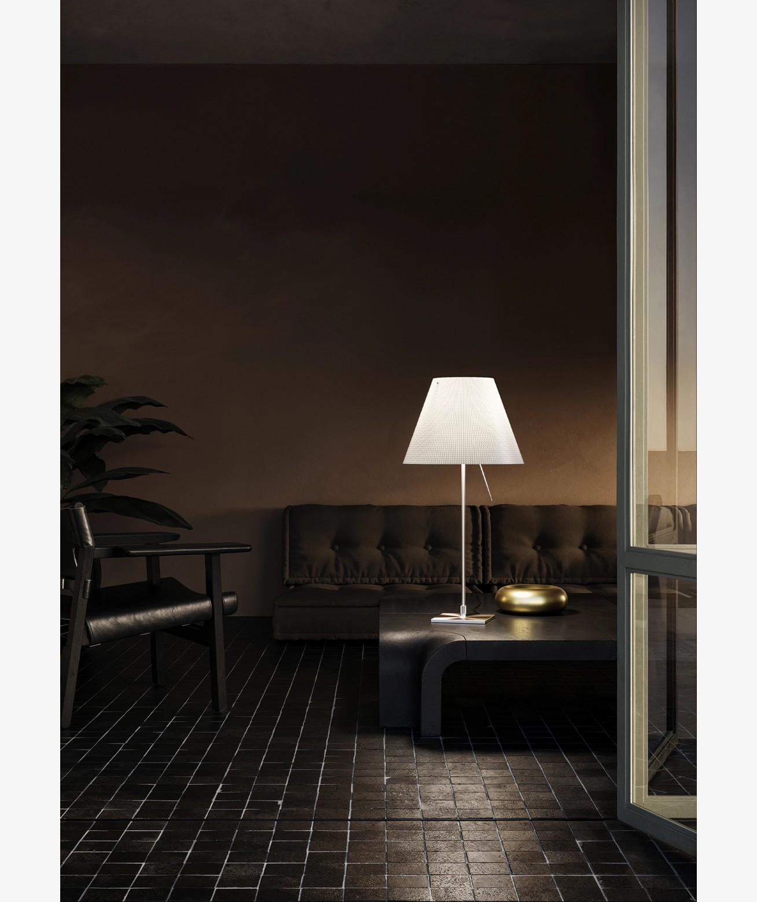
图：Costanza 锥形聚碳酸酯灯罩台灯置于深色客厅边几，光从乳白灯罩均匀漫出。图源：Luceplan 官网 Costanza 产品页。
02 品牌概述
Luceplan 是 1978 年创立于意大利米兰的设计师照明品牌，现属 Orbital Design Collective（原 Calligaris Group，Alpha Private Equity 控股）。它以"工程优先、光学理性"为方法论，靠 Riccardo Sarfatti、Paolo Rizzatto、Alberto Meda 三代核心设计师与外部新锐的合作网络，四十年间拿下七座金圆规奖，产品覆盖室内装饰灯、声学照明、户外照明与项目定制四大业务线，出口约占销售 85%。
| 项目 | 内容 |
|---|---|
| 品牌名 | Luceplan S.r.l.（通行读法为意大利语 Luce"光"＋Plan"项目"；官方仅解释为"以项目研究为方法"，命名人未留记录） |
| 国家/地区 | 意大利米兰（1978 年创立；注册地 Via Ernesto Teodoro Moneta 40, 20161 Milano） |
| 成立时间 | 1978 年（官方公司史口径；创始人 Riccardo Sarfatti 悼文页作 1979 年，两种口径并陈） |
| 创始人 | Riccardo Sarfatti（Arteluce 创始人 Gino Sarfatti 之子）、其妻 Sandra Severi、大学同窗 Paolo Rizzatto（三人均为米兰理工毕业建筑师） |
| 核心设计师 | Paolo Rizzatto（联合创始人）；Alberto Meda（1984 年加入，塑料工程师）；Daniel Rybakken、Francisco Gomez Paz、Mandalaki Studio、Alessandro Zambelli、Marco Spatti、Studio Odile Decq、Archirivolto、Zsuzsanna Horvath |
| 其他关键人物 | Patrizia Vicenzi（现任 CEO，TheOrg/FinalScout 一致）；Andrea Colombo（CFO） |
| 官方理念 | "Culture of Light"（光的文化）：设计文化、实验性、美学研究，永不脱离功能品质与效率 |
| 品牌归属 | Orbital Design Collective（2018 年由 Alpha Private Equity 控股的 Calligaris Group 于 2019 年 11 月收购 Luceplan；集团 2023 年更名） |
| 核心业务 | 室内装饰灯（decorative）、声学照明（acoustic，2012 年起布局）、户外照明（outdoor，2020 年起扩线）、项目定制（contract，官方自述"真正核心"） |
| 经典产品 | Berenice（1985）、Costanza（1986）、Lola（1987）、Titania（1989）、Costanzina（1992）、Metropoli（1992）、Hope（2009/2010）、Ascent（2013）、Counterbalance（2014）、Mesh（2015）、Compendium（2017）、Blow 风扇灯（1997） |
| 金圆规奖 | 产品奖 7 座（D7 1981、Lola 1989、Metropoli 1994、Mix 2008、Hope 2011、Counterbalance 2014、Ascent 2016）；Rizzatto 2024 与 Meda 2026 先后获终身成就奖 |
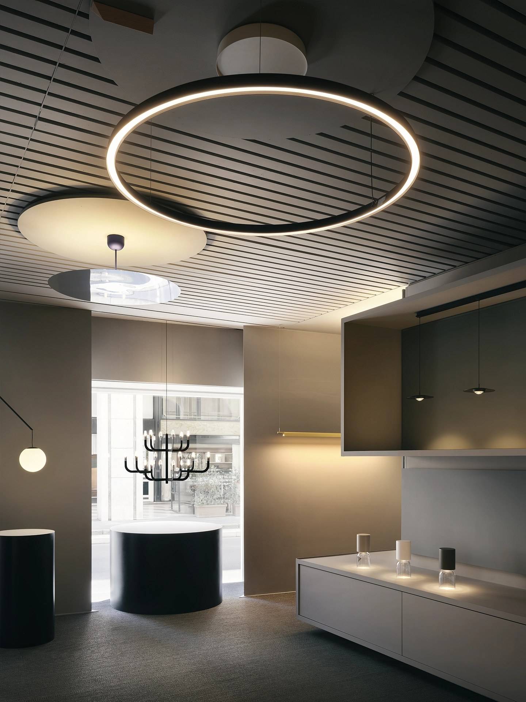
图：米兰 Corso Monforte 7 号旗舰店室内，与 FLOS（9 号）同处一条"灯街"（street of lights）。图源：Luceplan 官网旗舰店页。
03 Brand 品牌：从 Arteluce 学徒到光的文化
血缘：Gino Sarfatti 与 Arteluce
Luceplan 的技术与设计血缘直接来自 Arteluce。Luceplan 官方设计师页（Riccardo Sarfatti 条目）原文："He was the son of Gino Sarfatti, Arteluce's founder and one of the pioneers of Italian design as regards lighting. Alongside his university work, Riccardo Sarfatti worked at Arteluce from 1964 to 1978."即：Riccardo Sarfatti 自 24 岁起在父亲 Gino Sarfatti 的 Arteluce 工作 14 年，直到 1978 年自立门户。
术语注释：Arteluce——Gino Sarfatti 1939 年在米兰创立的灯具公司，意大利现代照明的先驱；1973 年末 Gino 将其卖给 FLOS，1974 年完成交接。
这段血缘对 Luceplan 的意义不止于出身：Gino Sarfatti 是意大利照明"光学优先、形式服务光"路线的源头，Arteluce 的 2097 吊灯等型号至今以 FLOS 名义再版。儿子在父亲卖掉公司之后，仍以员工身份在原品牌工作了约四年，随后把父亲的方法论带进一家新公司。Luceplan 官方 2010 年目录把创立动机写成"consolidare l'esperienza acquisita durante gli anni di collaborazione con Gino Sarfatti"（巩固与 Gino Sarfatti 合作期间积累的经验）。
1978 年创立：三位年轻建筑师
2013 年官方 Pocket Catalog 引言给出了创立叙事（多语种一致）："In 1978, in Milan, three young architects decided to establish a lighting products company and called it Luceplan… Riccardo Sarfatti, drawing upon the experience gained from his father, Gino Sarfatti, founder of Arteluce…, along with his wife, Sandra Severi and fellow student, Paolo Rizzatto, started up a high quality company…"
三人角色（官方与多源一致）：
- Riccardo Sarfatti（1940-04-03 米兰 – 2010-09-10 Tremezzo）：米兰理工建筑学 1965 年毕业；曾任威尼斯与米兰大学建筑史代理教授；Luceplan 的 Managing Director／General Manager 直到 2004 年；1997–2002 年任意大利照明工业协会 Assoluce 主席。
- Sandra Severi（婚后名 Sandra Severi Sarfatti）：米兰理工建筑学毕业；读书期间曾在 Vittorio Gregotti、Lodovico Meneghetti、Giotto Stoppino 的"Architetti Associati"事务所工作；她是 Riccardo Sarfatti 之妻（注意：不是 Rizzatto 的伴侣）。官方资料未列出她署名设计的具体型号，更接近经营/合伙人角色。
- Paolo Rizzatto（1941 年米兰生）：米兰理工建筑学 1965 年毕业；自由建筑师，Costanza 全家族作者；后为 Alias、Artemide 等多家公司设计，作品入藏多家博物馆。
需要并陈的口径差异：公司页、2013/2026 目录及几乎所有经销商页均写 1978 年创立；但官方 Riccardo Sarfatti 设计师页（悼文体）写"1979 年与 Rizzatto、Severi 共同创立"。合理读法是签约注册与首批产品上市落在 1978 年末/1979 年初。写作时以 1978 为对外口径并注明差异。
图：创始人 Riccardo Sarfatti（1940–2010）黑白肖像，Gino Sarfatti 之子，1978 年与妻、同窗共创 Luceplan。图源：Luceplan 官网设计师页。
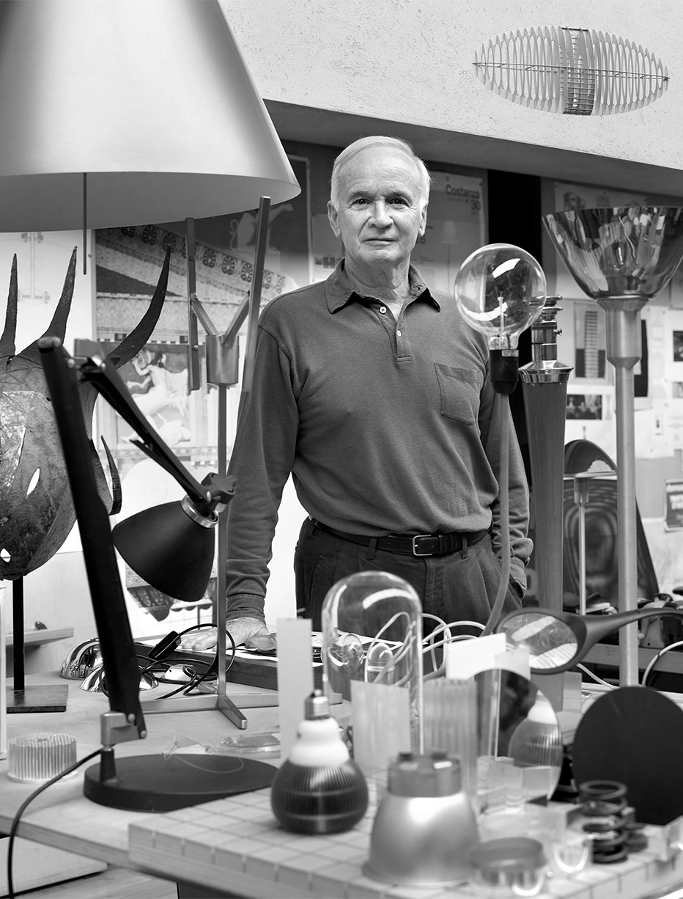
图：联合创始人兼首席设计师 Paolo Rizzatto（1941 年生），Costanza 全家族作者，2024 年获金圆规终身成就奖。图源：Luceplan 官网设计师页。
1984 年：塑料工程师 Alberto Meda 入伙
1984 年，塑料工程师出身的 Alberto Meda 加入 Luceplan。2013 官方目录引言原文："In 1984, Alberto Meda, a specialist plastics engineer and dedicated experimenter, joined the group of founding partners, bringing new impetus to the brand's innovative approach."
术语注释：Compasso d'Oro ADI（金圆规奖）——意大利工业设计协会 ADI 自 1954 年起颁发的意大利设计最高荣誉，分产品奖与终身成就奖。
Meda 的身份比一般设计师更偏工程：1969 年米兰理工机械工程硕士，1973–1980 年任 Kartell 技术总监，还曾任 Alfa Romeo 设计经理。他与 Rizzatto 从 1985 年 Berenice 开始形成长达约二十七年的搭档，产出 Berenice、Lola、Titania、Metropoli、Mix、Otto Watt 等一系列获奖型号——Luceplan 的经典期几乎全部由这对"工程师×建筑师"组合完成。这是它与 FLOS"签约明星设计师"模式的关键区别：核心产品由内部合伙人搭档持续产出。
金圆规七座：从 D7 到 Ascent
Luceplan 官方 2026 目录版权页列出的金圆规产品奖年份序列为 1981、1989、1994、2008、2011、2014、2016，共七座：
| 年份 | 型号 | 设计师 | 备注 |
|---|---|---|---|
| 1981（第十二届） | D7 | Paolo Rizzatto & Sandro Colbertaldo | 品牌第一座金圆规 |
| 1989（第十五届） | Lola | Alberto Meda & Paolo Rizzatto | ADI 档案直接著录 |
| 1994（第十七届） | Metropoli | Meda & Rizzatto & Riccardo Sarfatti | 创始人 Sarfatti 少有联名 |
| 2008 | Mix | Meda & Rizzatto | 现已停产 |
| 2011 | Hope | Francisco Gomez Paz & Rizzatto | 另获总统府"Premio dei Premi"创新奖 |
| 2014（第二十三届） | Counterbalance | Daniel Rybakken | 首位获此奖的斯堪的纳维亚设计师 |
| 2016（第二十四届） | Ascent | Daniel Rybakken | ADI 评语"以一个动作校准光强与光域之美的简约" |
需要说明的口径：坊间资料有时把 Mix 获奖年写成 2005，实为设计年 2005、获奖 2008（Meda 个人官网与 2026 目录版权页一致）；Rizzatto 个人金圆规编年还有 1994/1995 的年份分歧，本报告采用 Luceplan 官方 1994 口径。2024 年 Rizzatto、2026 年 Meda 先后获金圆规终身成就奖——这是个人荣誉，不是公司第八座产品奖，不应混淆。
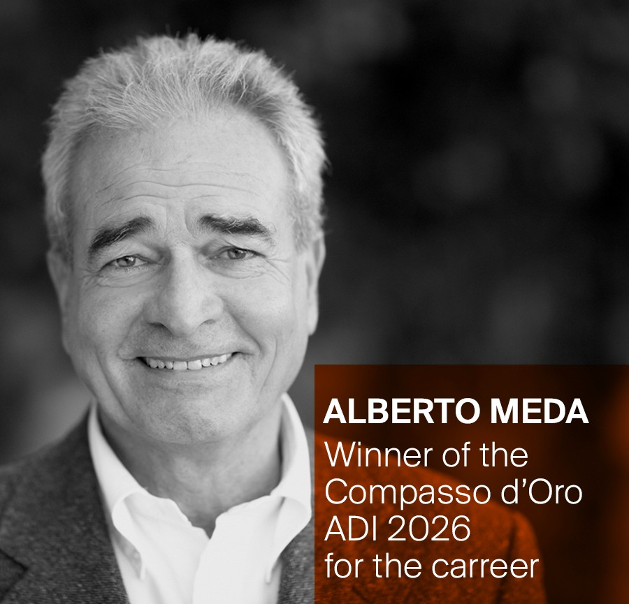
图：Alberto Meda 获 2026 年 ADI 金圆规终身成就奖官方新闻配图。图源：Luceplan 官网新闻稿。
资本史：家族公司 → Philips/Signify → Calligaris/Orbital
Luceplan 的所有权经历了两段戏剧性更替，是本报告最需要向读者讲清的事实链：
- 2004–2005 交棒：Riccardo Sarfatti 任总经理至 2004 年，2005 年起转向政治（伦巴第大区议员）；其子 Alessandro Sarfatti 1996 年加入公司，约 2005 年任 CEO（Astep 官方介绍口径），后离开并创立 Astep（2017 年起获 FLOS 授权再版 Gino Sarfatti 作品）。2010-09-10，Riccardo 去世。
- 2010 年 5 月并入 Philips：Philips Q4 2010 财报演示把 Luceplan 列为当年战略收购，纳入 Philips Lighting 的 Consumer Luminaires（消费灯具）事业部。官方目录给出的理由是"把意大利设计品牌与飞利浦最先进的 LED 光源研究绑定"。收购对价与股比未公开。
- 2018 更名 Signify：Philips 照明业务 2016 年分拆上市（Philips Lighting N.V.），2018-05-16 更名 Signify。
- 2019 年 10 月出售：2019-10-07，Signify 官方宣布将 Luceplan 出售给意大利家具集团 Calligaris——Luceplan 当时营收约 2000 万欧元；Signify 的理由是聚焦"功能性与互联照明产品/系统"的 home business，高端装饰设计灯被视为非核心。交易 2019 年第四季度完成交割（Oaklins 交易档案确认 2019-11）。
- 2023 更名 Orbital：Calligaris Group 2018 年 9 月被泛欧私募 Alpha Private Equity 控股；2023 年（恰逢 Calligaris 创立 100 周年）集团更名 Orbital Design Collective，旗下五品牌为 Calligaris、Connubia、Ditre Italia、Luceplan、Fatboy。
- 2026 年现状：截至检索日，Luceplan 属 Orbital Design Collective / Alpha PE，与 Philips/Signify 无任何股权关系；2026 年 4 月集团从 Flos B&B Italia Group 挖来新高管启动"新阶段发展"（姓名待核实）。
两次易主有一个共同逻辑：工业巨头要的是规模与生态，家具集团要的是家居协同。Luceplan 靠工程能力被飞利浦买入、又因装饰基因被 Signify 卖出，最后落进一个愿意保留其设计独立性的家具集团——这条路径本身就是它的品牌定位的注脚。
理念：Culture of Light
Luceplan 官方 2026 目录版权页把自己的价值观系统概括为 "Culture of Light"（光的文化）："Design culture, experimentation and aesthetic research, never disconnected from functional quality and efficiency: this is the system of values that has determined the identity of Luceplan since its founding in 1978."
公司页补充了经营口径：出口占销售约 85%；产品分室内设计、户外、声学解决方案三大类。2013 官方目录则给出方法论原点——"the formal features of a Luceplan lamp are never predetermined, but represent the logical outcome of an idea that evolves… thanks to the ability of resolving even the most complex problems."即：一盏 Luceplan 灯的形式特征从来不是预设前提，而是一个想法在解决复杂问题过程中自然长出的结果。这是品牌所有产品故事的出发点。
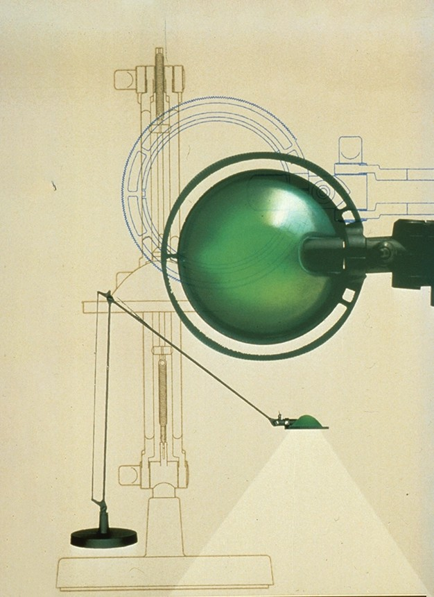
图：Berenice（1985）早期技术线稿，弹簧平衡臂与抛物面反射器结构图。图源：Luceplan 官网 Berenice 40 周年故事页。
04 Category 品类与市场：装饰与项目两个口径
品类的两个口径
谈 Luceplan 的市场，同样必须分清两种采购逻辑不同的生意（与 FLOS 报告同构，但 Luceplan 的切分更微妙）。
第一种是装饰性设计师灯具（decorative / furniture lighting）。台灯、落地灯、吊灯、壁灯本身就是陈设，按件计价。代表：Berenice、Costanza、Costanzina、Titania、Lola、Hope、Blow、Mesh、Koinè、Compendium、J-us、Zile。采购方式是消费者或设计师在目录/展厅里"选一件灯"。
第二种是建筑与项目照明（architectural / specification lighting）。Luceplan 没有 FLOS Professional 那样庞大的建筑轨道产品线，但目录中走 spec 通道的产品包括：Liiu 照明系统（VANTOT）、Koinè 轨道版（koine-track，Mandalaki）、E04 管状壁灯（Habits Studio）、Metropoli 格栅系统、Counterbalance 壁/吸顶系列、Compendium 线性与圆盘吸顶。这些产品出 spec sheet、CAD/Revit 块（官网每个产品页提供 dwg 下载）、IES 与调光协议（0-10V、DALI、push、phase-cut），按项目报价。Luceplan 官方 Novità 页明确写道：contract（酒店/办公/商业项目）"rimane il vero core dell'azienda"（仍是公司真正的核心）。
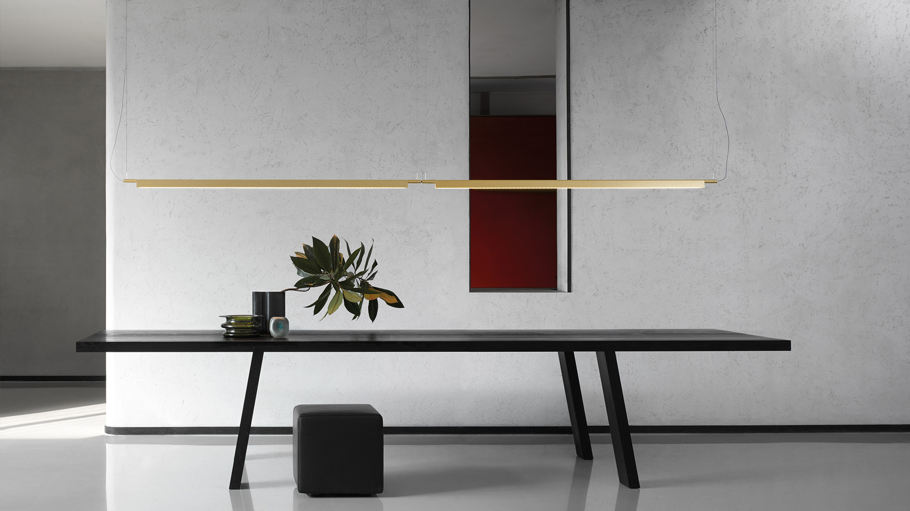
图：Compendium 线性灯端部接头/反射器节点细节——项目线"文件齐全、按图安装"的产品典型。图源：Luceplan 官网 Compendium 吊灯页。
术语注释：specify——设计师在图纸或物料清单阶段指定具体品牌型号，业主按清单采购，是工程照明的核心成交方式。
两口径差异：装饰线靠品牌拉力与展厅体验；项目线靠建筑师/照明设计师指定的推力。Luceplan 目录里有两个 FLOS、Artemide 没有的独立品类入口：Blow 风扇灯（"灯在扇叶之上"的专利结构）与 声学照明（Pétale 2012、Silenzio 2013、Farel 2018、Hinpan 2025 等灯+吸音一体化产品）。
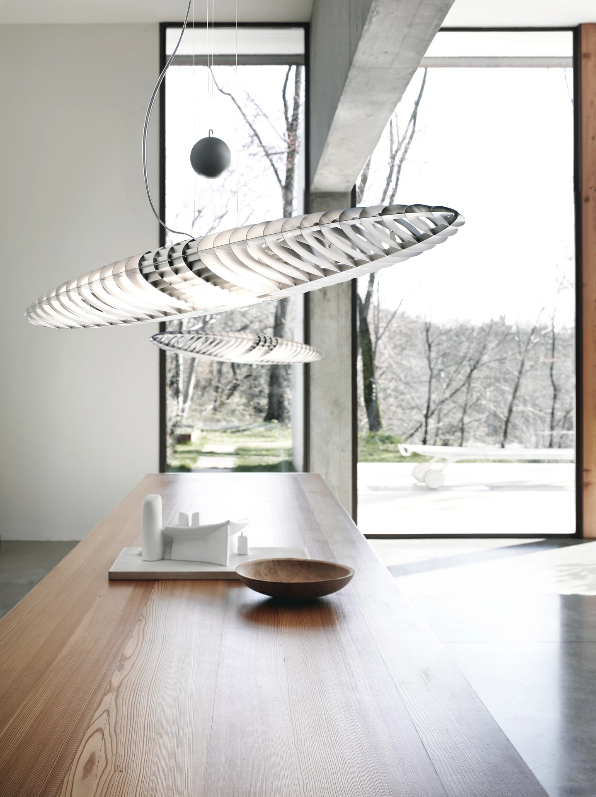
图：Titania 吊灯悬于餐桌上方——装饰性灯具"按件计价"的典型场景。图源：Luceplan 官网 Titania 产品页。
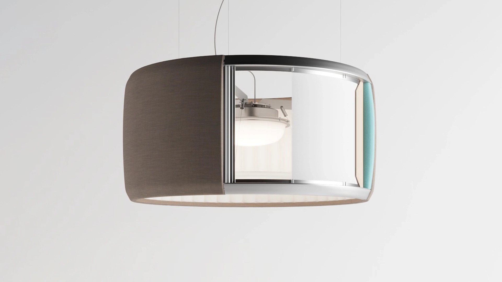
图：Silenzio（D79）声学灯 Kvadrat Remix 织物罩与吸音结构零件图——Luceplan 独有的"灯+吸音"品类入口。图源：Luceplan 官网 Silenzio 产品页。
市场规模的判断口径
各家机构统计口径差异接近一倍，以下只作方向性参考。全球装饰照明：Mordor Intelligence 估计 2025 年约 758.8 亿美元、2031 年约 965 亿美元、CAGR 4.09%；口径更窄的机构（Reports and Data 等）只算纯装饰，约 426–439 亿美元。高端/设计师照明细分：Fortune Business Insights 给 2025 年 210.8 亿美元、CAGR 8.0%——高段增速明显快于大盘，这是 Luceplan 所在段应参考的窄口径。
行业背景方面，意大利全国灯具制造商协会 ASSIL（ANIE-ASSIL 年度报告）称 2024 年意大利照明工业营业额约 30 亿欧元、同比 -7.4%；2025 年初继续负增长（2025 年 2 月单月生产 -15.0%）。Luceplan 母公司层面的行业环境处于收缩通道。Luceplan 单体营收未公开：2019 年出售时约 2000 万欧元，2022–2026 年数字 Calligaris/Orbital 不单独披露；行业普遍认为其体量小于 FLOS（2025 约 2.29 亿欧元）、与 Artemide（2023 集团 1.115 亿欧元）同量级或略小——方向性判断，非官方数字。
价格带：2026 年 10 月实查
以下价格为 2026-10-21/22 在经销商渠道实查（官网 luceplan.com 不挂零售价、不直接电商，只出目录/spec）。欧洲经销商当时处秋季促销窗口，促销价随季节变动。
| 型号（设计师/年份） | 款式 | 实查价 | 渠道 |
|---|---|---|---|
| Berenice Table（Meda & Rizzatto, 1985） | 台灯 | $750 起 / €523（促销） | 2Modern / light11 |
| Berenice Floor | 落地灯 | CA$1,200 | The Modern Shop |
| Costanza Floor（Rizzatto, 1986） | 落地灯 | $552 促销 / $690 目录 | 2Modern |
| Costanza Table telescopic | 台灯 | €556–789 | Ottevangers |
| Costanza Suspension | 吊灯 | €347–513 | Ottevangers |
| Costanzina Table | 台灯 | €248–449 | Ottevangers / eyeondesign |
| Lady Costanza Floor | 落地灯 | $3,082 / €1,749–1,899 | Modern Planet / Ottevangers |
| Grande Costanza Floor | 落地灯 | $2,484 | Modern Planet |
| Titania Suspension（Rizzatto） | 吊灯 | €567（促销） | Ottevangers |
| Lola Floor（Meda & Rizzatto, 1980s） | 落地灯 | €669（比价 €409 起） | Ottevangers / Klarna |
| Hope 61cm（Gomez Paz & Rizzatto） | 吸顶/吊灯 | €1,329–1,399 | Ottevangers |
| Hope 200cm | 吊灯 | €14,749（促销） | Ottevangers |
| Blow Ceiling（Giardini, 1997） | 风扇灯 | €413–795 | lichtexklusiv / Platinlux |
| Compendium（Rybakken, 2017） | 吊/落地 | €949 / £1,140 | Ottevangers / Silvera |
| Illan Suspension | 吊灯 | €1,126–1,689 | Ottevangers |
| Koinè Suspension（Mandalaki） | 吊灯 | €864–1,584 | light11 / Prismalight |
| Koinè LED Floor | 落地灯 | $2,004–2,358 | 2Modern |
| Mesh Ø100（Gomez Paz, 2015） | 吊灯 | €4,213（目录 €5,016） | gmrcom |
| Counterbalance Wall | 壁灯 | €427（促销，目录 €569） | reuter.com |
| Counterbalance Floor | 落地灯 | $2,151 | Modern Planet |
| Zile Floor（Archirivolto, PLA） | 落地灯 | €813–904 | light11.fr |
与 FLOS/Artemide 对照（口径与两库报告对齐）：Luceplan 走量经典（Costanza floor $690、Berenice table $750）与 Artemide 同档或略高，明显低于 FLOS 同尺度经典（FLOS Snoopy €1,267、Taccia €3,016）；价格天花板由 Hope ∅200（€14,749）与 Mesh Ø100（€4,213）这类大直径项目款制造，而非台灯/落地灯单品。
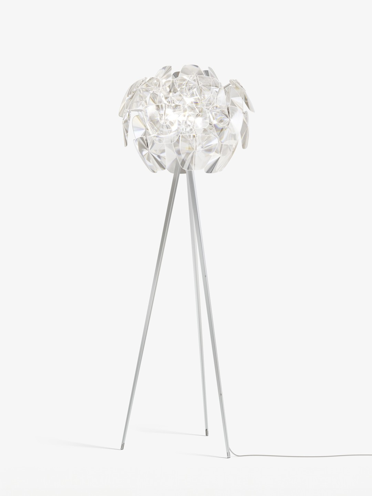
图：Hope 落地版（高 198cm）——大尺寸项目款是 Luceplan 价格天花板的制造者。图源：Luceplan 官网 Hope 落地页。
渠道结构
Luceplan 官网不挂价、不直接电商，是目录/spec/新闻站——这是它与 FLOS 美国站（直接挂价电商）最大的渠道差异。零售靠三层：米兰 Corso Monforte 7 旗舰店（"光之道"）；欧洲设计经销商（Ottevangers、light11、Platinlux、Prismalight、Silvera 等）与北美（2Modern、Modern Planet、The Modern Shop、Lumens）；以及美国子公司 Luceplan USA Inc.（Secaucus NJ）服务北美项目分销。巴黎零售目前借 Calligaris 门店渠道（集团协同）；纽约展厅检索日处于"临时关闭搬迁"状态（原 SoHo，办公在 Tribeca/Spring Place）。
中国市场现状（2026-10-22 实查）：官网经销商定位器在华唯一登记的线下店为上海全胜照明设计工程有限公司（Quansheng）；天猫/京东未发现可确认的官方旗舰店，淘宝存在第三方进口/代购卖家（页面未标注官方身份）；2014 年 Luceplan 曾与 Modular 在上海八号桥开出亚洲首店（青年报 2014-11-25 报道）。与 FLOS、Artemide 相比，Luceplan 在华零售触点显著更弱——这是品牌全球声量与渠道建设的真实落差。
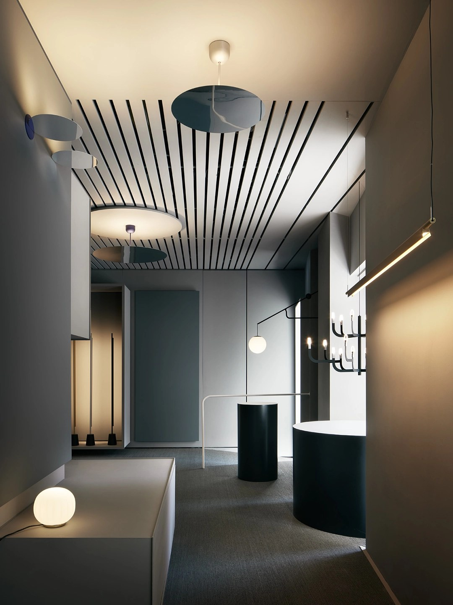
图：Luceplan 公司展厅/办公照明空间实景，中性色环境下的灯具陈列。图源：Luceplan 官网公司页。
05 User 用户与场景：建筑师、买者与住客
决策链：买者、定者与用者
设计师灯具是一个三方决策天然分离的品类，而 Luceplan 因 contract 占比更高而更明显。买者是高净值住宅业主、酒店/餐厅/办公业主与项目总包，多数不亲自选灯、按设计师清单付款；定者是建筑师、室内设计师、照明设计师——Luceplan 官网为他们提供 dwg、spec sheet、项目对接，米兰旗舰店与 Euroluce 展位主要服务这一人群；用者是酒店住客、办公室员工与家庭终端，他们可能叫不出 Costanza 的名字，但在设计酒店书桌上、餐厅吊灯下"瞥见"它。
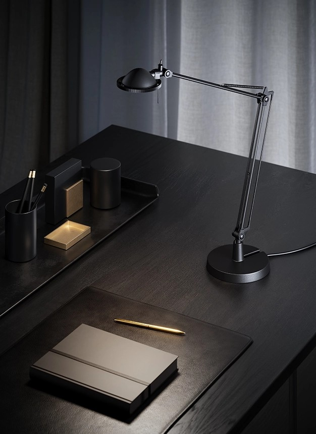
图：Berenice 黑色版阅读场景——买者、定者与用者三方在同一张书桌上相遇。图源：Luceplan 官网 Berenice 40 周年故事页。
术语注释：JTBD（Jobs to Be Done，用户任务）——用户"雇佣"产品完成的功能/情感/社会任务。 术语注释：CEP（Category Entry Points，品类入口）——用户首次意识到需求、接触品类的具体场景与渠道。
四类场景中的任务与入口
| 场景 | 核心 JTBD | 主要 CEP | 典型型号 |
|---|---|---|---|
| 住宅自购 | 挑一件四十年不过时、由建筑师设计、光质可靠的物件 | 设计媒体刷灵感 → 经销商比价（官网不下单）→ 本地授权经销商看实物 → 下单 | Costanza、Berenice、Costanzina、IC 同级当代款 |
| 设计师配单 | 在图纸阶段指定光质可靠、有 dwg/IES、可批量复制维护的品牌 | luceplan.com 下载 dwg/技术 PDF → Luceplan USA/欧洲销售对接 → Euroluce/LIGHT 展 → 项目报价 | Compendium、Koinè、Liiu、Metropoli |
| 酒店/hospitality | 为客房与公共区批量配置线性/圆盘吸顶照明 | 集团协同（Calligaris 门店、巴黎 M&O）；官网 stories 案例 | Compendium、Illan、Koinè、Mesh |
| 礼品/入门设计款 | 买一件有博物馆馆藏背书的中低价设计礼 | 经销商平台、官方入门款 | Costanzina（€248 起）、Lola Wall（€249）、Zile |
值得注意的体验差异：FLOS 把高客单决策的最后一公里物理锁在展厅，Luceplan 则是把整个购买决策都交给经销商——官网不做零售，消费者在线比价后仍要落到授权渠道。这把"设计师推荐"的权重抬得更高，也解释了为什么 contract 被官方称为"真正核心"。
06 Positioning 定位：比工程更轻盈，比装饰更理性
参照系与目标人群
Luceplan 的参照系同样是意大利设计史，但与 FLOS 的参照系不同：FLOS 对标的是 Castiglioni 式"现代经典"，Luceplan 对标的是 Arteluce 式"光学理性"传统。它的目标人群也有两层：愿意为一盏由建筑师与工程师共同设计的灯支付数百至数千欧元的个人客户；以及把 Luceplan 当作"有 dwg、有 IES、光斑可控"的指定项的建筑师与照明设计师。前者买的是理性设计的可信度，后者买的是光学与文件层面的确定性。
差异点与共同点
术语注释：POD（Point of Difference，差异点）——品牌相对竞品独有的、被消费者认可的差异。 术语注释：POP（Points of Parity，基准点）——在品类中必须具备、否则无法入围的共性能力。
Luceplan 的 POD 有三个：一是 Arteluce 谱系——创始人 Riccardo Sarfatti 是意大利现代照明先驱之子，品牌继承了"光学优先"的方法论血统，这是任何竞品无法复制的出身；二是工程与光学理性——从 Costanza 的自支撑聚碳酸酯灯罩（首创）、Hope 的菲涅尔透镜花瓣，到 Counterbalance 的齿轮配重、Ascent 的手势调光，它的创新都发生在"解决光的问题"层面而非造型层面；三是四十年七座金圆规的密度，加上 MoMA 直接馆藏（Costanzina、Mix、On Off）与意大利总统府馆藏（Hope）的背书。
POP 同样有三个：高端照明的光学品质（2700K、CRI 90、眩光控制）、项目级协议与文件能力（dwg、IES、DALI/0-10V）、以及可靠的意大利制造与可拆解备件体系。这三点是设计师候选清单的入场券，但只有这三点，品牌就只是工程供应商。
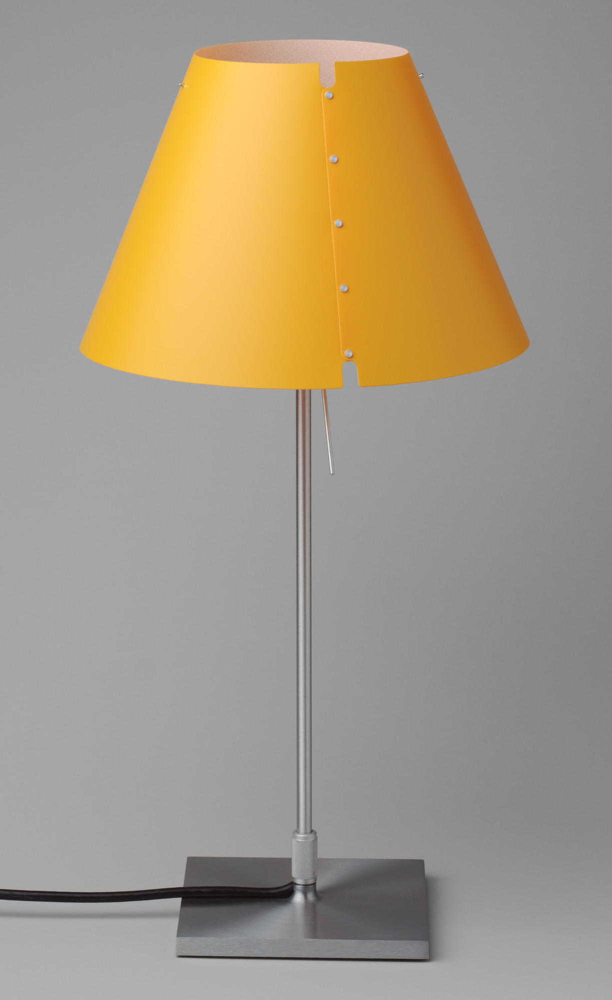
图：MoMA 永久馆藏标准照（"Constanzina Table Lamp (D13pi). 1992"）——POD 之三"博物馆背书"的直接证据。图源：MoMA 馆藏页 works/1681。
从品牌承诺到产品证据的链
Luceplan 的承诺链是："形式不是预设，而是问题解决的结果；光先被当作工程问题，诗意是副产品。"落到产品：Costanza 用一片 PC 解决传统灯罩的骨架问题；Hope 用菲涅尔透镜把灯塔光学搬进餐厅；Counterbalance 用齿轮配重让 190 厘米钢臂"违背物理定律"地悬停；Ascent 用一个滑动手势完成开关与调光；Blow 用专利布局把吊扇做成设计品；Zile 用可堆肥的生物塑料重做灯罩。这套证据链的完整性，是 Luceplan 与"设计师签名灯具"市场里其他品牌区分开的核心。
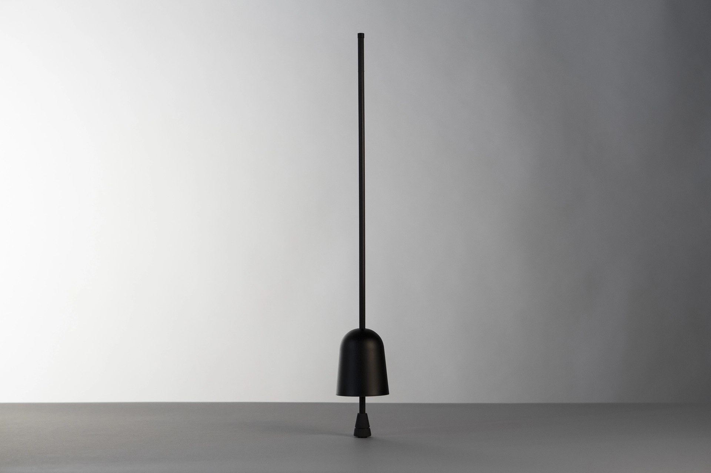
图：Ascent 灯罩沿灯杆上下滑动调光的交互瞬间——"机制本身就是体验"的证据链一环。图源：Luceplan 官网 Ascent 产品页。
07 Product 产品：从弹簧臂到隐形光锥
Berenice（1985，Alberto Meda & Paolo Rizzatto）：弹簧臂阅读灯的轻量化原型
1980 年代中期，桌面阅读灯被两种范式瓜分：Luxo 式重型弹簧平衡臂台灯（铝管粗、底座沉）和意大利极简柱灯。Luceplan 官方 40 周年故事页自述：Berenice 是"一系列小型弹簧平衡灯无可比拟的先驱"，提供阅读灯渴望的一切功能——调节极其轻松、动作顺滑精确、稳固稳定。它是 Meda 与 Rizzatto 为 Luceplan 联手的第一盏灯，也是两人四十年合作的起点。
现行桌灯（D12N/D12NPI）由 42 个零件组成（钢、压铸铝、塑料、尼龙）：压铸铝金属件、增强尼龙摩擦铰链、Rynite 高耐久聚酯树脂灯头座；反射器可选压制玻璃（带抗紫外保护）或金属；现行 LED 为 2W G4 3000K。家族覆盖 Table/Floor/Wall 三型，反射器有七种颜色。命名"Berenice"在公共词源中指向埃及王后贝蕾妮丝二世与后发座（Coma Berenices），但官方从未解释命名出处，正文不作定论。Berenice 未获金圆规（个别经销商页误标，与官方获奖清单矛盾，不采用）；1995 年曾借展 MoMA《Mutant Materials》展（借展不等于永久馆藏，MoMA 馆藏库中未检索到其馆藏号）；2023–2024 年米兰三年展《Alberto Meda: Tension and Lightness》将其列为代表作。
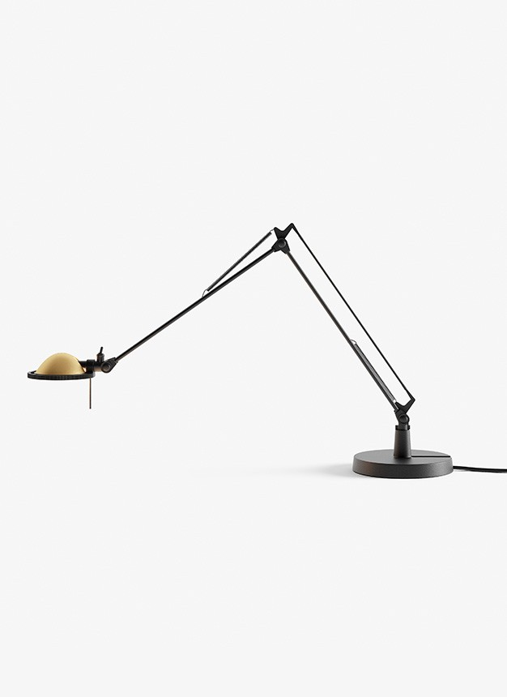
图：Berenice 桌灯官方白底整机图：压铸铝双弹簧臂、摩擦铰链与圆灯头。图源：Luceplan 官网 Berenice 产品页。
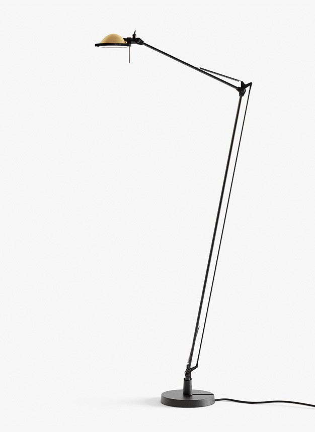
图：Berenice 落地版，同结构加长摇臂。图源：Luceplan 官网 Berenice 落地页。
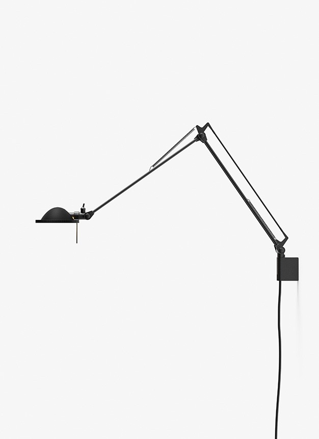
图：Berenice 壁装版，摇臂自墙面伸出。图源：Luceplan 官网 Berenice 壁装页。
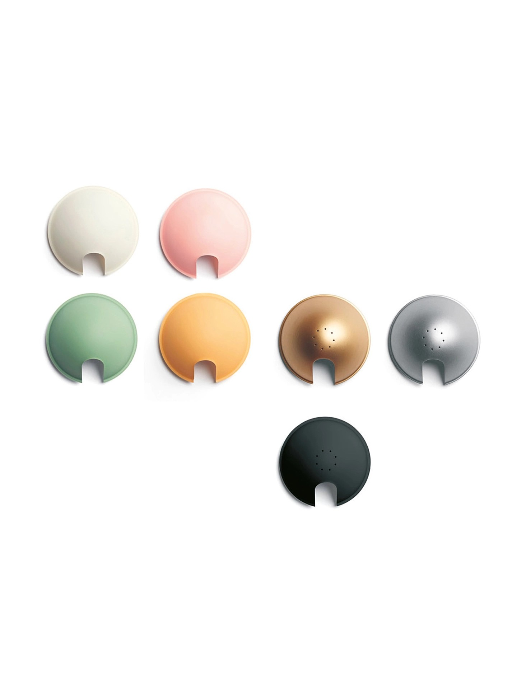
图：Berenice 七款可换反射器色卡（白/粉/黄/鼠尾草绿/黑/铝/黄铜）。图源：Luceplan 官网 Berenice 产品页。
Costanza（1986，Paolo Rizzatto）：一盏用聚碳酸酯灯罩再讲一遍的古典台灯
Costanza 要在 1986 年重新定义"古典锥形台灯"：保留传统灯罩的居家意象，但把材料换成可替换的丝印聚碳酸酯，并在杆上集成一根"感官调光杆"——拉一下切换四档亮度。官方产品页原文："Blending tradition and technology, Costanza reinterprets a classic image in a contemporary way."它是第一盏应用"自支撑聚碳酸酯灯罩"（self-supporting polycarbonate shade）的灯——不再需要金属骨架绷布，一片 PC 薄板靠自身刚度成型，这是 Luceplan 材料史的原点。
结构为铝杆+方形铝底座，吊灯版通过一根标志性的钢制配重调节高度；1986 年首版灯罩有蓝、象牙白、开心果绿、橙、红、黑、白七色。2026 年为 Costanza 40 周年（1986–2026），官方推出三款特殊图案新灯罩，把灯罩变成"能与光互动的图形面"。Architonic 称其为"Luceplan 的第一个大爆款，产量超一百万件"（B 级）；它是 Luceplan 被仿最多也最常被二手转售的型号之一。命名"Costanza"为意大利语女性名、词义"恒定"，官方未解释是否取词义。
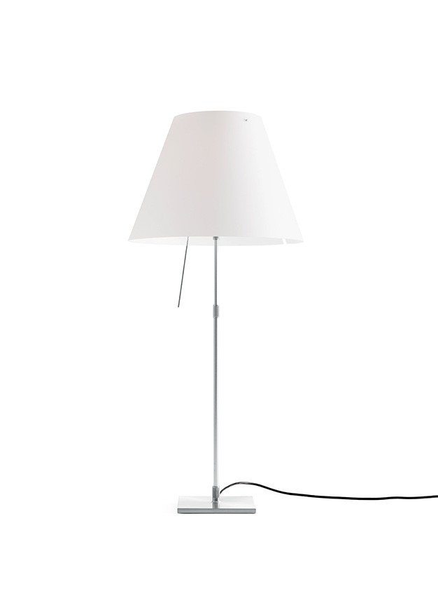
图：Costanza 桌灯官方白底整机：锥形丝印聚碳酸酯灯罩、铝杆与方形铝底座。图源：Luceplan 官网 Costanza 产品页。
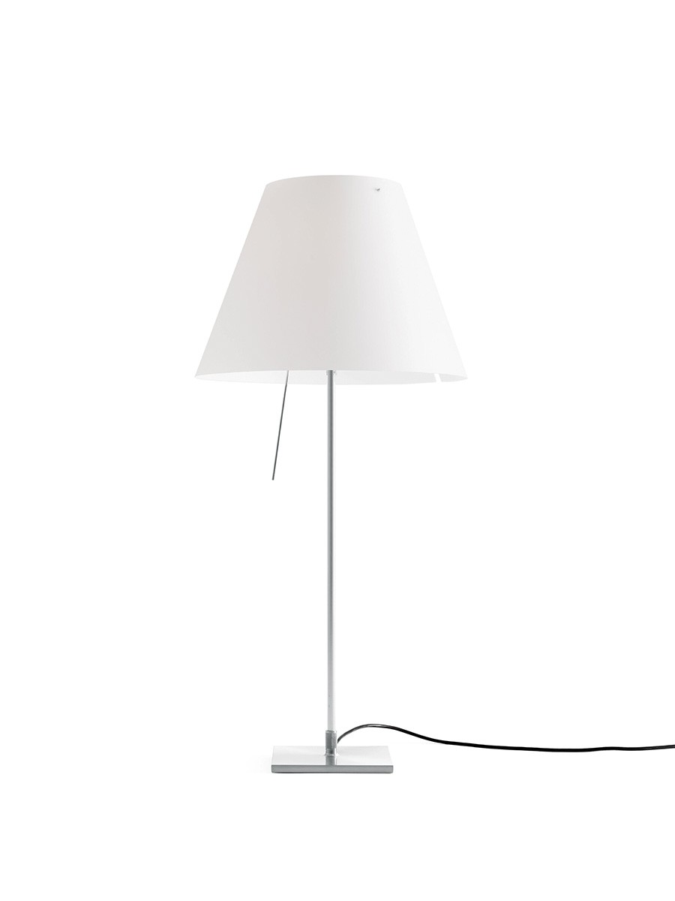
图：Costanza 方形铝底座与伸缩杆细节。图源：Luceplan 官网 Costanza 产品图。

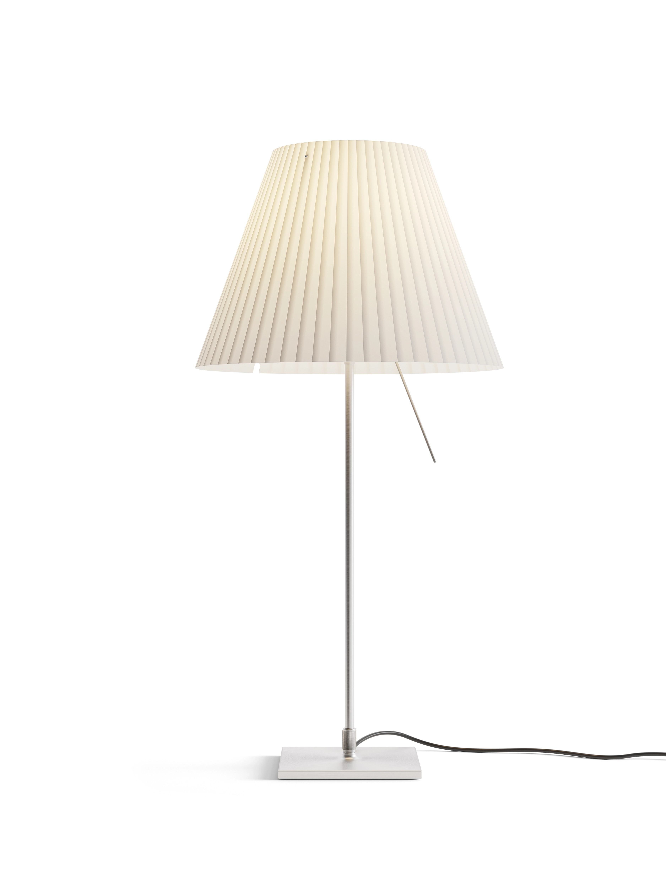
图：Costanza 丝印聚碳酸酯 plisse 褶纹灯罩高分辨率特写。图源：Luceplan 官网 Costanza 产品页。
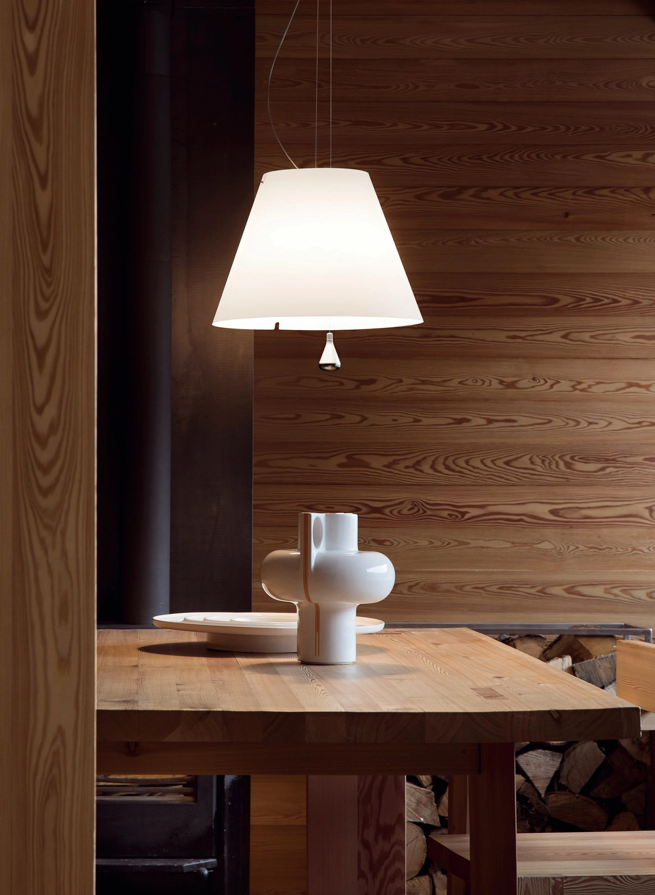
图：Costanza 吊灯版悬于木餐桌上方，钢配重调节高度。图源：Luceplan 官网 Costanza 吊灯页。
Costanzina（1992，Paolo Rizzatto）：MoMA 永久馆藏的小 Costanza
Costanzina 是 Costanza 的缩小版。意大利语官方页描述其结构："聚碳酸酯灯罩仅以两个平衡点搁在铝结构上；被碰时会摇摆，但不脱落。"MoMA 永久馆藏直接著录这件 1992 年的 D13pi 桌灯（材质 silkscreen polycarbonate and aluminum；注意 MoMA 拼写为 "Constanzina"，官方拼写 "Costanzina"，同一盏灯两种拼写并存）。
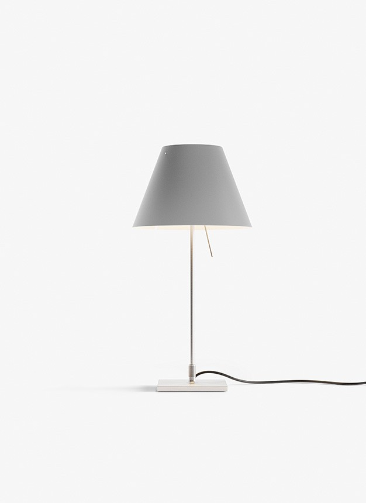
图：Costanzina 桌灯白底整机，小一号锥罩与方形铝底座。图源：Luceplan 官网 Costanzina 产品页。
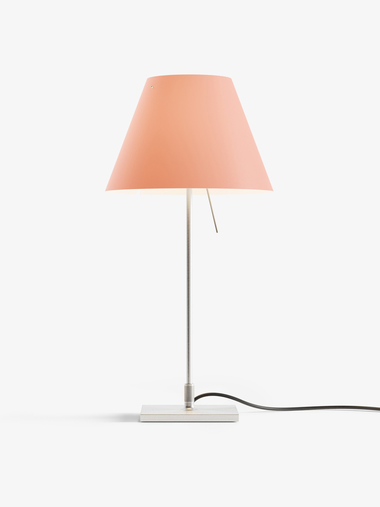
图：Costanzina 粉色可换灯罩版。图源：Luceplan 官网 Costanzina 产品页。
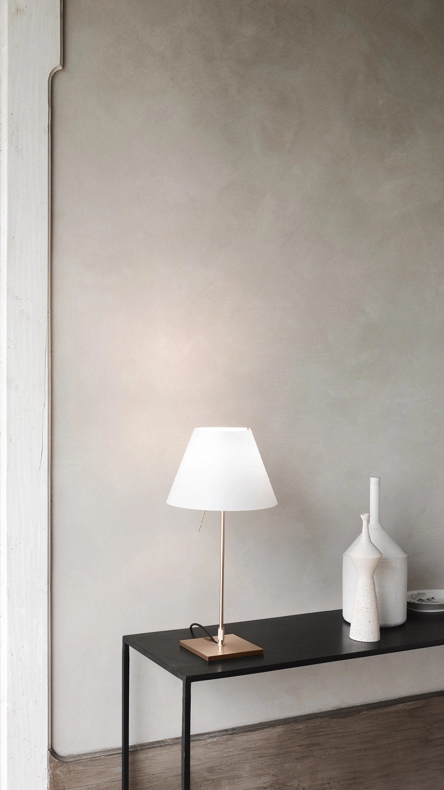
图：小尺寸 Costanzina 置于 console 桌的客厅场景。图源：Luceplan 官网 Costanzina 产品页。
Titania（1989，Alberto Meda & Paolo Rizzatto）：一片能换"衣服"的铝鳞吊灯
Titania 的关键创新在于：灯罩不再是一道"挡光板/漫射罩"二分物，铝鳞骨架本身既是结构也是可见装饰，内部可插入不同颜色的丝印聚碳酸酯滤片，用户自行更换灯的"情绪色"。Meda 个人站自述："发光外壳充当光源的笼子，同时完全消除眩光；灯骨由一系列顺序排列的铝肋构成。"吊灯通过钢索末端悬挂的金属配重球调节高度。
奖项需严格区分"获奖"与"入选"：Titania 1991 年金圆规为入选（selection）而非获奖（坊间常误写为获奖，本报告不采用）；另获 1992 Design Plus（法兰克福）、1990 巴黎 SIL 特别提名。1995 年衍生落地版 Titania Terra，2005 年加大版 Queen Titania，Titania Clamp 夹桌版 1996 年获汉诺威工业设计论坛奖。命名"Titania"指向莎士比亚《仲夏夜之梦》仙后或天王星卫星天卫三（两者皆为推测，官方未释义）。
图：Titania 吊灯官方整机：铝肋纺锤体与配重钢索。图源：Luceplan 官网 Titania 产品页。
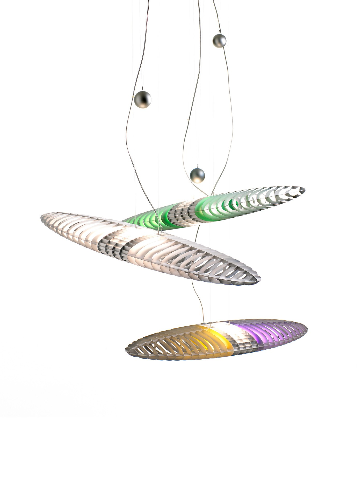
图：多件白色 Titania 悬挂阵列。图源：Luceplan 官网 Titania 产品页。
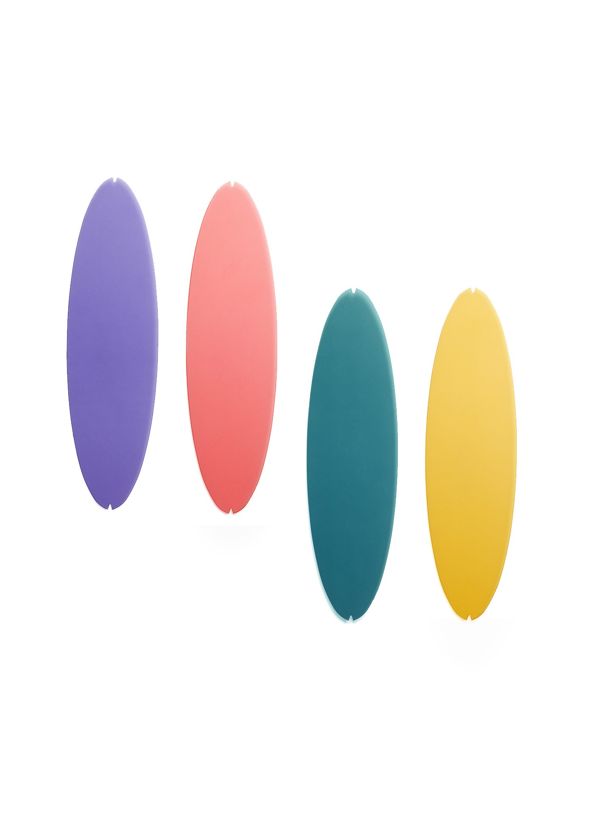
图：四枚可换彩色丝印聚碳酸酯滤片（紫/玫瑰/青/黄）——Titania"换衣服"机制。图源：Luceplan 官网 Titania 产品页。
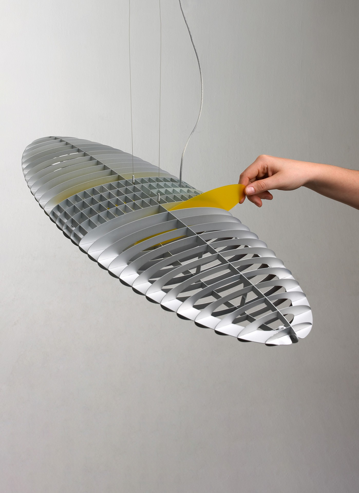
图：手插黄色滤片的操作特写，展示灯罩更换机构。图源：Luceplan 官网 Titania 产品页。
Lola（1987，Alberto Meda & Paolo Rizzatto）：金圆规背书的玻纤缠绕阅读灯
Lola 是 Luceplan 获奖史里最"硬"的一件：1987 年设计，1989 年获第十五届金圆规奖——ADI Design Museum 官网直接著录，颁奖词注明 1989 年 4 月 12 日米兰评审。它被金圆规认可的核心是工程密度：杆身为纤维缠绕（filament winding）成型复合材料、灯头为注塑玻纤增强聚酯、底座为压铸锌合金（zama）。造型记忆点是上段"叉形"（forked）结构，反射器夹在两叉之间可单手调节方向——这是它与 Berenice（圆灯头）最直观的区分。Lola 至今仍在产（2024 官方手册为现行版本）。
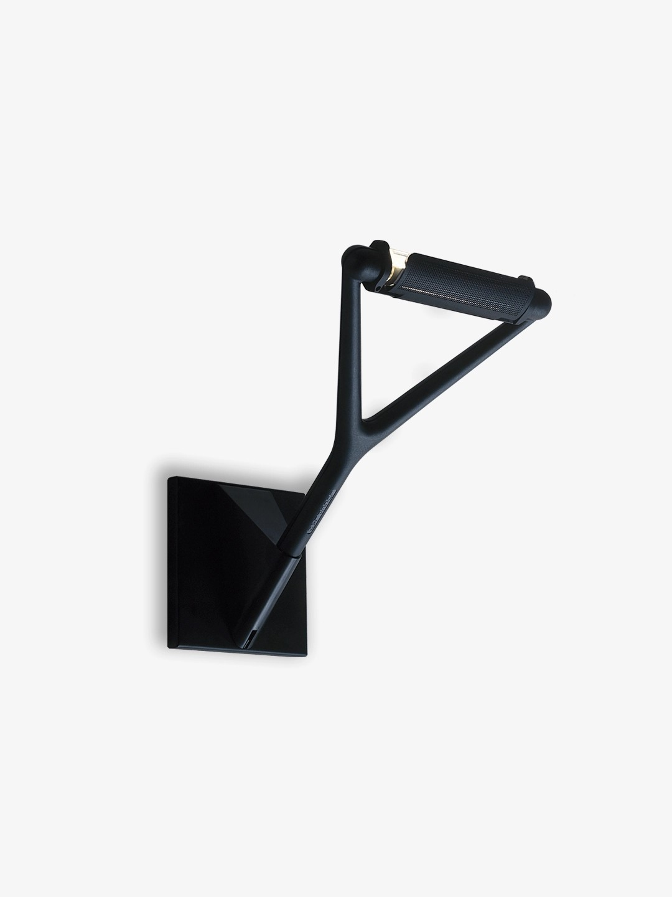
图：Lola 壁装版整机，黑色 Y 形摇臂灯头。图源：Luceplan 官方 2024 Lola 手册 PDF。
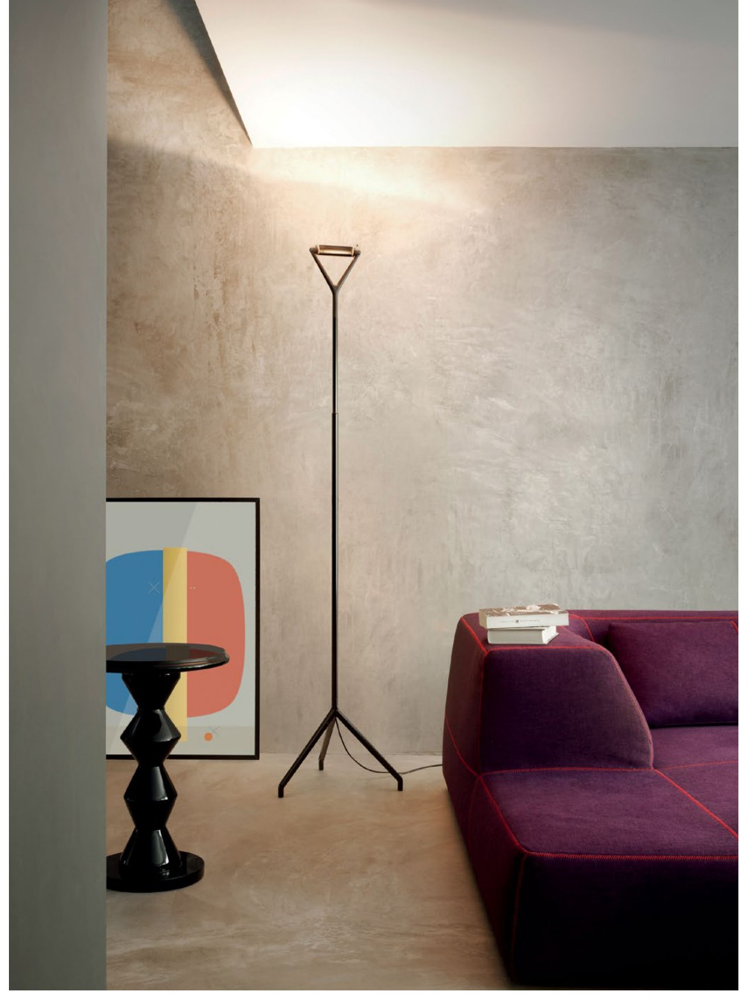
图：Lola 落地版场景，黑色三脚架落地灯置于客厅。图源：Luceplan 官方 2024 Lola 手册 PDF。
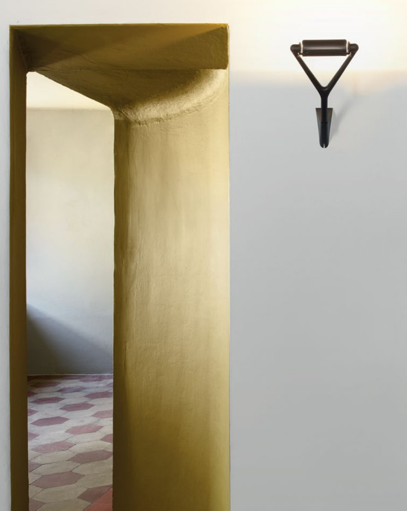
图：Lola 叉形灯头特写，两叉间夹可单手调节的反射器。图源：Luceplan 官方 2024 Lola 手册 PDF。
Hope（2009 设计/2010 上市，Francisco Gomez Paz & Paolo Rizzatto）：用菲涅尔透镜花瓣重做的水晶吊灯
Hope 是 Luceplan 装饰线在"去物质化时代"的宣言：把经典水晶吊灯的水晶换成亚克力菲涅尔透镜花瓣。官方技术 PDF 原文："Created as a contemporary reinterpretation of the classic chandelier, whose crystals are transformed into petals… Hope represents the quintessence of the decorative lamp in the age of dematerialization: a lightweight aggregation of technological parts."花瓣为平菲涅尔透镜（flat Fresnel lenses，原本用于灯塔/路灯聚光），通过注塑聚碳酸酯"小枝条"耦合到抛光不锈钢结构上；官方称亚克力透镜达到与玻璃相似的屈光效果，但在尺寸、厚度、重量上不受限。
家族覆盖吊灯、吸顶、落地（高 198cm）、壁灯四型。Hope 获 2011 年金圆规，并被意大利总统府（Quirinale）当代艺术馆藏直接著录——国家级收藏。年份口径：设计 2009（技术 PDF）、投产/目录 2010（2013 Pocket Catalog），正文采用"2009 设计、2010 上市"。
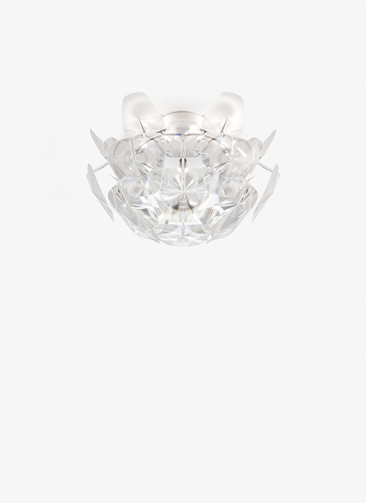
图：Hope 吸顶/吊灯整机，菲涅尔亚克力花瓣放射聚合。图源：Luceplan 官网 Hope 吸顶页。
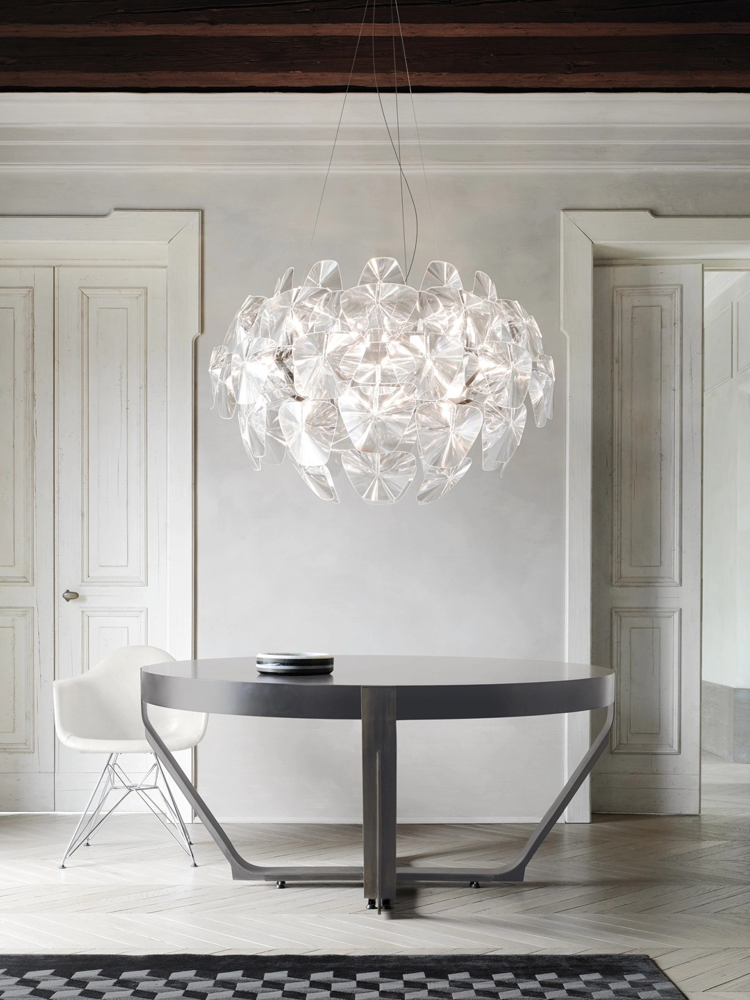
图：深色空间中枝形发光花瓣悬挂场景。图源：Luceplan 官网 Hope 吸顶页。
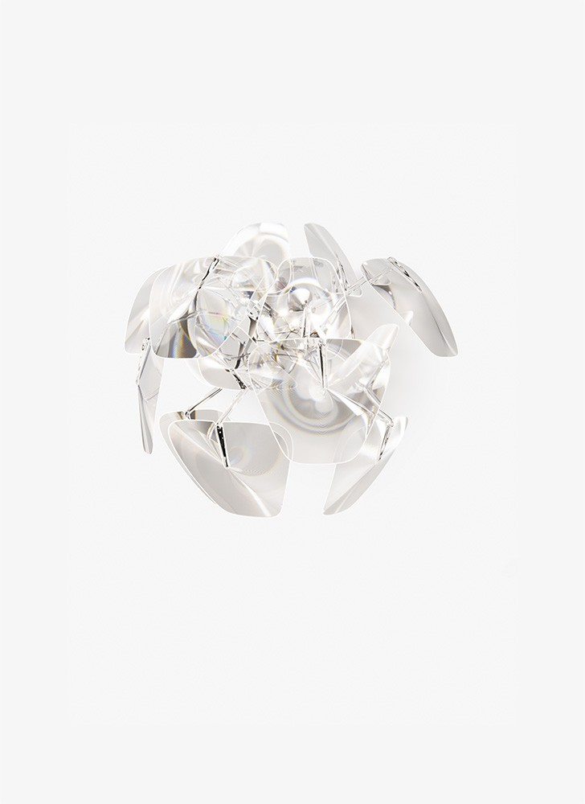
图：Hope 壁灯单簇花瓣近景。图源：Luceplan 官网 Hope 壁灯页。
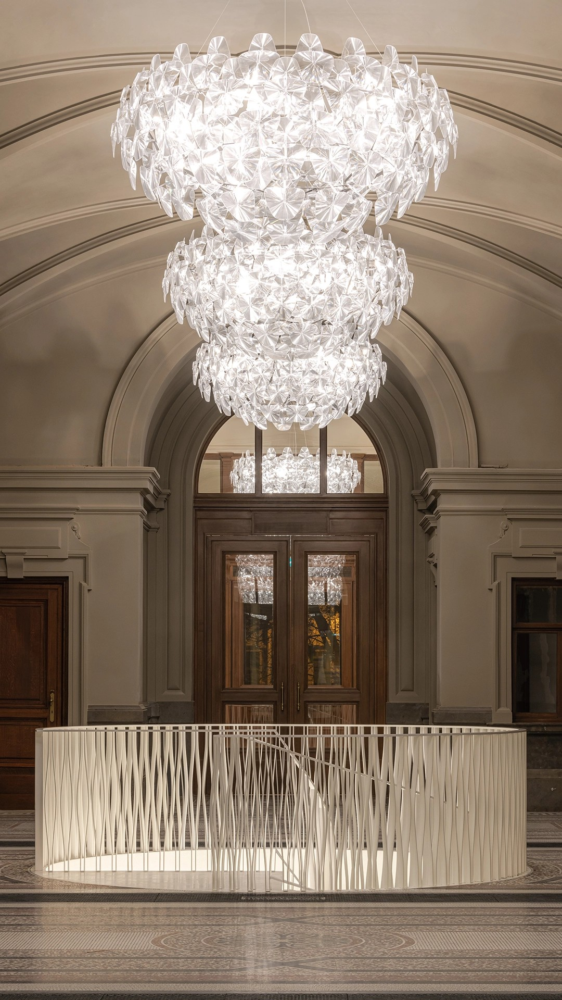
图：大型 Hope 枝形吊灯现场，比利时安特卫普 KMSKA 皇家美术馆（Photo: Sebastian van Damme），contract 能力证据。图源：Luceplan 官网公司页。
Metropoli（1992，Meda & Rizzatto & Sarfatti）：1994 金圆规的模块化顶灯
Metropoli 1992 年设计、1994 年获金圆规，是重新设计现代吸顶灯（plafoniera）的尝试：简化漫射罩与灯体的连接件；漫射罩可用棱镜玻璃或乳白聚碳酸酯互换；漫射元件以结构胶平粘在压铸铝环形座上，胶兼作密封，使灯具可用于户外。三人共同署名（Meda + Rizzatto + Sarfatti），是创始人 Riccardo Sarfatti 少有的联名设计。
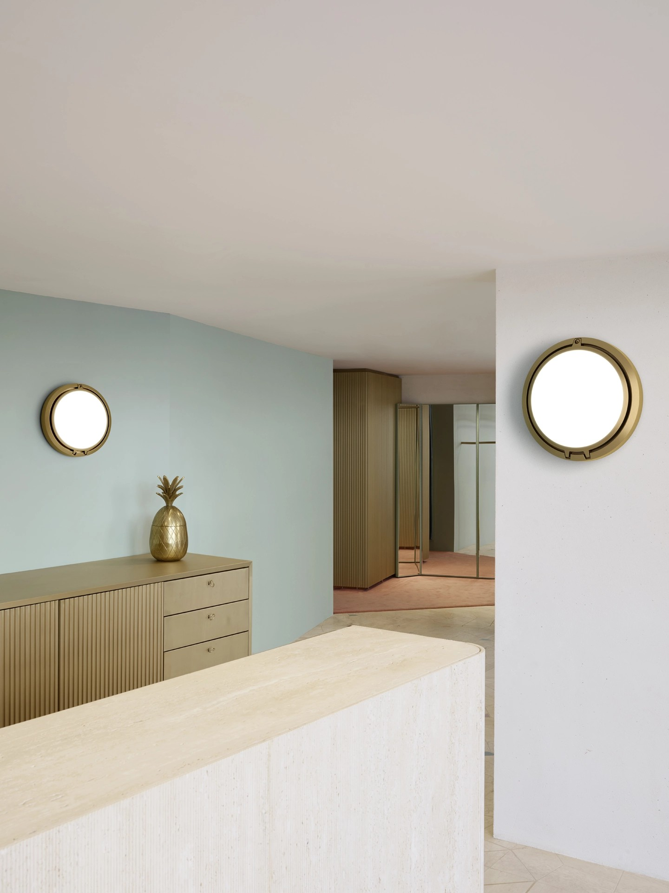
图：Metropoli 圆形吸/壁顶灯场景，铝/黄铜环加乳白圆罩。图源：Luceplan 官网产品图。
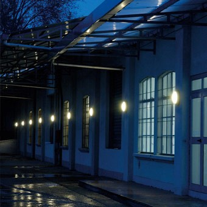
图：Metropoli 壁装夜间场景，外墙上一排发光圆形壁灯。图源：Alberto Meda 个人站。
停产经典：D7、Mix 与 On Off（1981–2005，博物馆证据）
三件已停产但为品牌定性的经典，本报告以目录与博物馆证据呈现：
- D7（1980/1981，Rizzatto & Sandro Colbertaldo）：Luceplan 成立三年后即获第十二届金圆规，是品牌第一座金圆规，2013 官方目录引言称"这是漫长获奖线中的第一座"。已停产，官网无产品页，本报告采用官方 2013 目录 PDF 裁切图。
- Mix（2005，Meda & Rizzatto）：2008 年获金圆规、现已停产；MoMA 永久馆藏直接著录（Aluminum and methacrylate）。
- On Off（1983，Meda & Franco Raggi & Denis Santachiara）：热塑性聚氨酯一体成型桌灯，MoMA 永久馆藏（馆藏号 239.1994，"Gift of the manufacturer"），是 Luceplan 最早进入 MoMA 的产品之一。
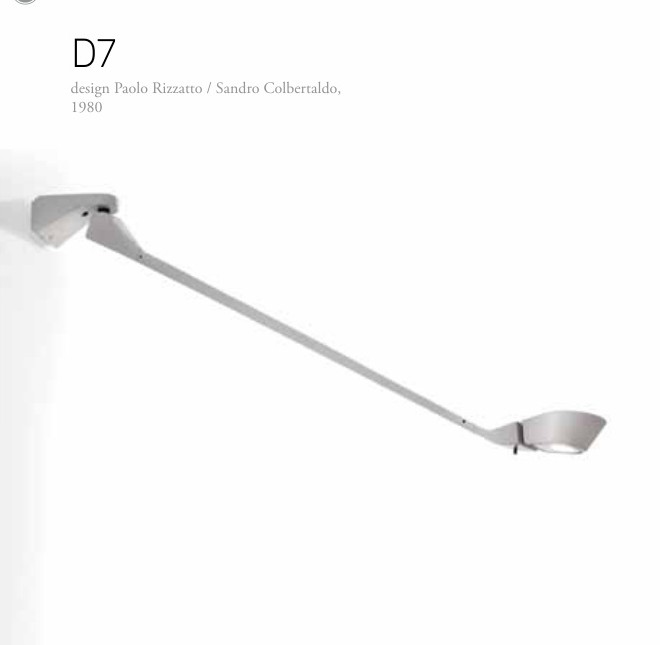
图：D7 铝长臂壁灯，官方 2013 目录 PDF 裁切，图内含设计师署名与金圆规徽章。图源：Luceplan 2013 Pocket Catalog。
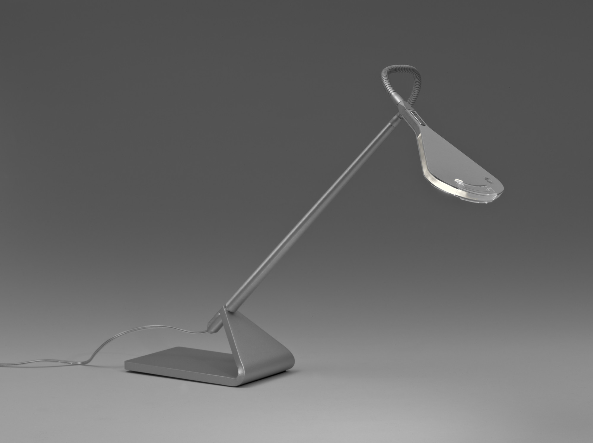
图：Mix Lamp（2005）MoMA 永久馆藏标准照，铝臂加泪滴形甲基丙烯酸酯灯头。图源：MoMA 馆藏页 works/120050。
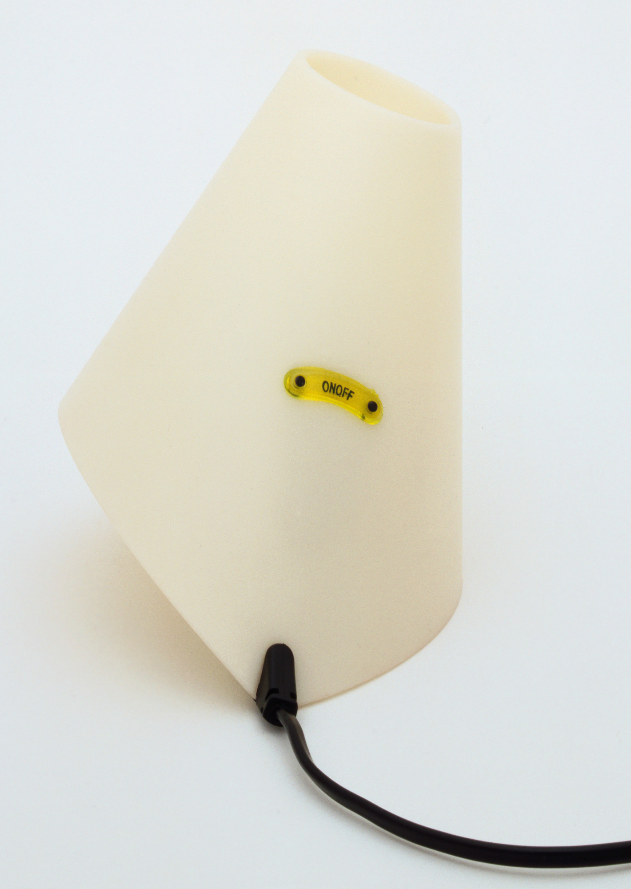
图：On Off Table Lamp（1983）MoMA 永久馆藏标准照，米白聚氨酯锥罩加黄色按键。图源：MoMA 馆藏页 works/2964。
Ascent（2013，Daniel Rybakken）：一个滑动手势完成全部调光
Ascent 是 Luceplan 2010 年代最重要的外部设计师 Daniel Rybakken（挪威人，1984 年生）在 Luceplan 的两座金圆规之一。官方产品页原文："Intimate, conceptual, Ascent provides infinite shadings of light intensity, thanks to the very precise axial dimmer controlled by electronics mounted inside the shade. Circuits on the stem send input to a microprocessor that reacts to the vertical movement, adjusting light flow."
即：钟形灯罩沿细长灯杆上下滑动，内部微处理器把"垂直位移"翻译成开/关与连续调光——上滑变亮、下滑变暗。这是一盏没有任何按键、纯靠手势位置完成全部交互的灯。材料为黑色阳极氧化挤出铝、黑色烤漆钢底座与聚氨酯抗冲击橡胶插销；光源 11W LED、2700K、CRI 90。2016 年获第二十四届金圆规，ADI 官方评语为"授予其以一个动作校准光强与光域之美的简约"（另获 Red Dot Honorable Mention 2014，B 级待复核）。项目案例包括挪威卑尔根艺术与设计学院、瑞典哥德堡 Koka 餐厅。
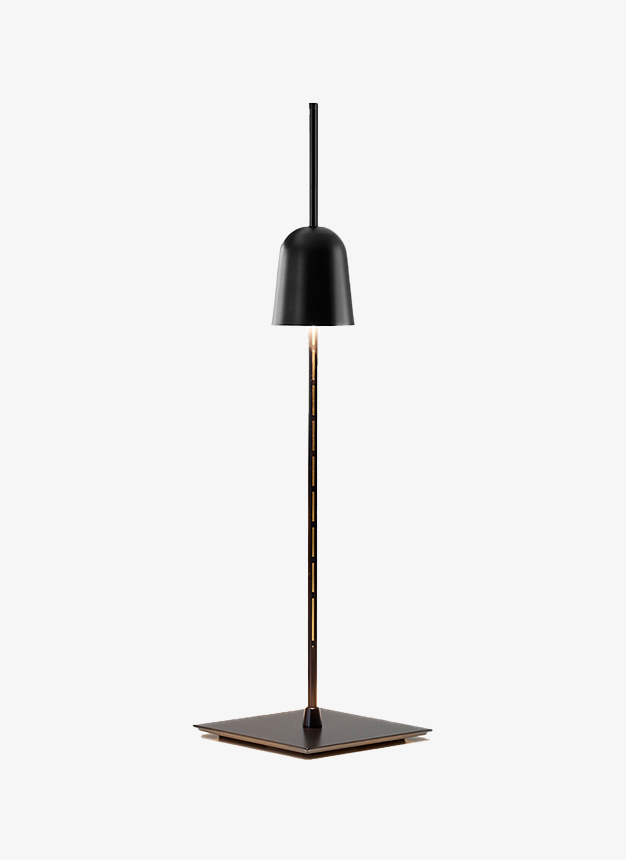
图：Ascent（D78）白底整机：黑色阳极氧化细杆、钟形反射灯罩与方形底座。图源：Luceplan 官网 Ascent 产品页。
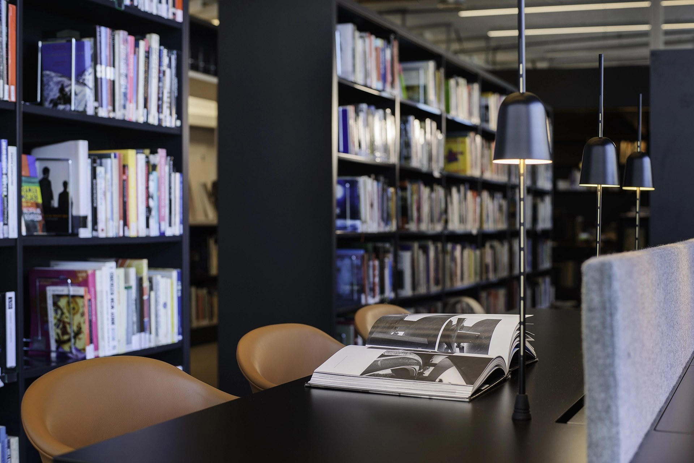
图：Ascent 项目实景，卑尔根艺术与设计学院书架阅读空间。图源：Luceplan 官网 Ascent 产品页。
Counterbalance（2014，Daniel Rybakken）：齿轮配重让长臂"违背物理定律"
Counterbalance 是一根 190 厘米的长悬臂，借助齿轮与配重在空间中自由悬停，"看似违背物理定律"。核心机构是热塑聚合物（thermopolymer）齿轮组：灯臂靠齿轮配重平衡，单手即可推至任意角度并停留。材料为压铸铝灯头与钢质灯臂。原型是壁灯（Wall），后扩展出落地版（Floor）。2014 年获第二十三届金圆规——Rybakken 因此成为第一位获此意大利奖的斯堪的纳维亚设计师。另获 Red Dot 2013（B 级，与 2014 上市的先后关系待核）。
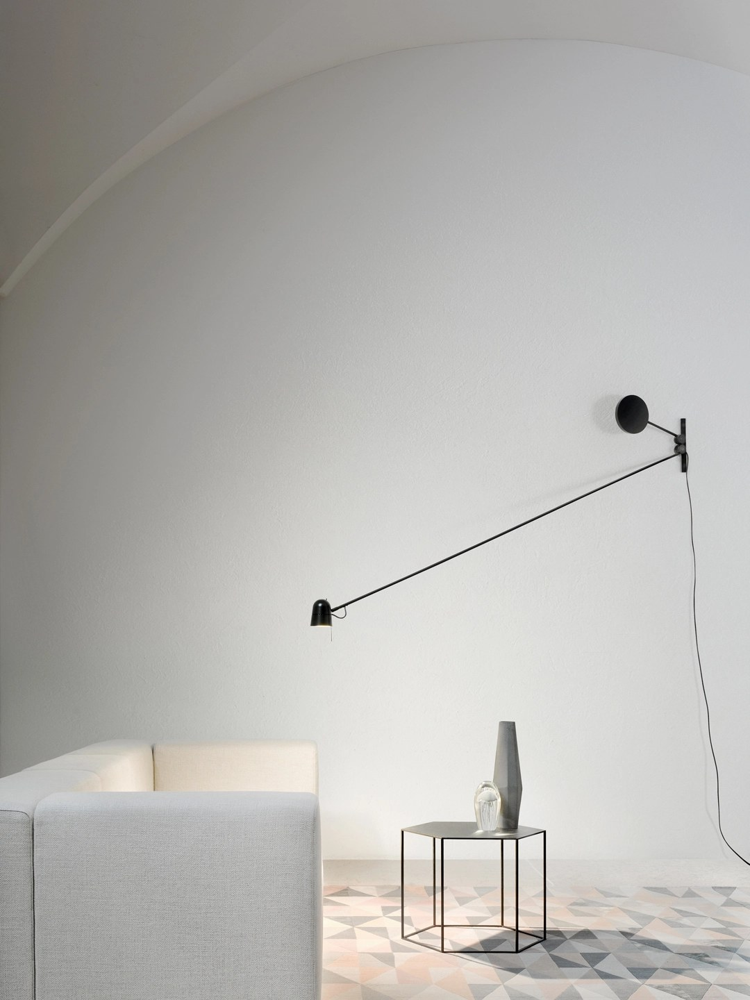
图：Counterbalance Wall（D73）整机：长钢悬臂自墙面伸出、LED 灯头与配重平衡。图源：Luceplan 官网 Counterbalance 壁灯页。
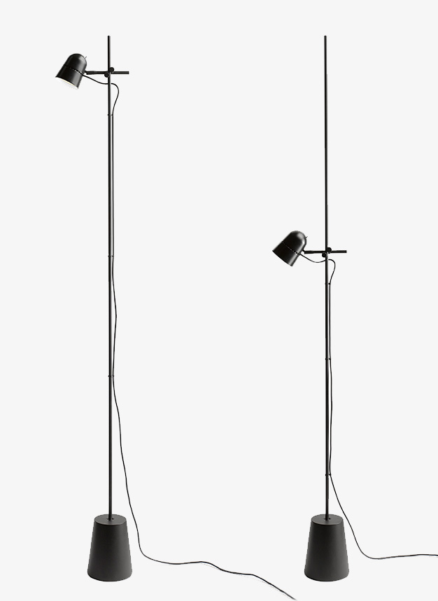
图：Counterbalance Floor（D73t）落地版：锥形配重底座加长臂灯头。图源：Luceplan 官网 Counterbalance 落地页。
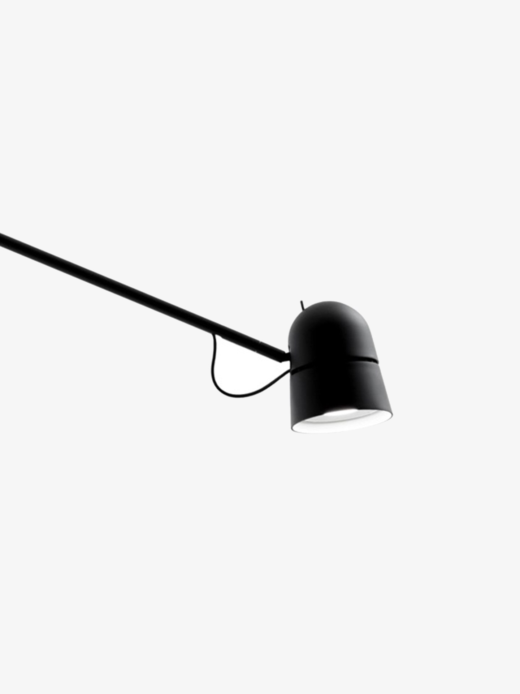
图：Counterbalance 压铸铝灯头与悬臂连接特写。图源：Luceplan 官网 Counterbalance 壁灯页。
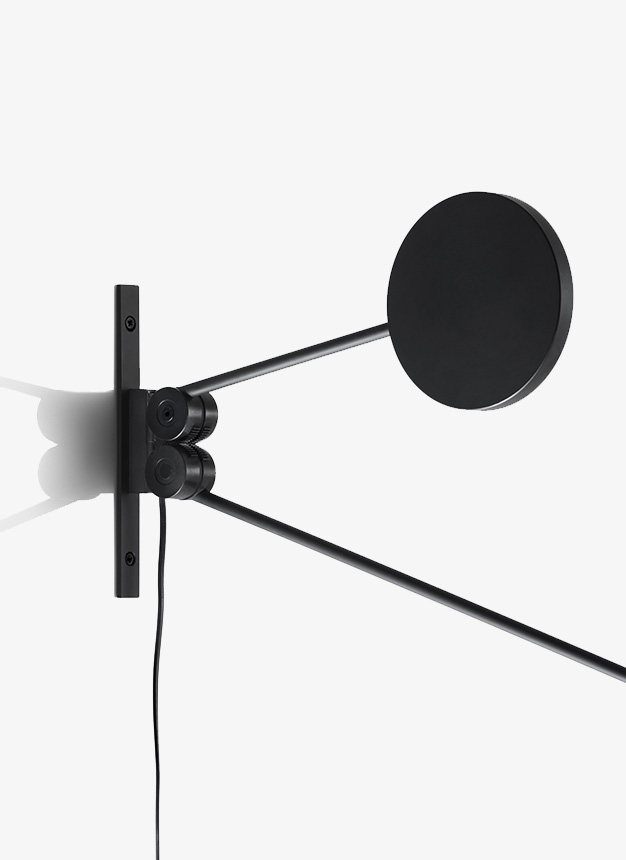
图：Counterbalance 热塑齿轮组配重机构特写——悬臂任意位置停留的核心。图源：Luceplan 官网 Counterbalance 壁灯页。
Mesh 与 Mesh Wireless（2015，Francisco Gomez Paz）：把光源拆成节点上的光点
Mesh 是官方对"LED 可被拆成极小单元"这一技术潜力的实验：一张柔性钢索编织网，LED 光源嵌在交叉节点上，"把光源从大灯泡拆成散布在网格节点上的微小点光源，让灯本身去物质化，只剩光，光才是主角"。结构为钢+聚碳酸酯透镜，三个直径 Ø55/80/100cm。它被纳入 SaloneSatellite 永久收藏 55 件作品名单，随国际巡展展出；官方项目案例包括瑞典 Uppsala EAAB office、希腊雅典 Athenaeum Grand Hotel。
Mesh Wireless 是集团时期智能互联的样本：大尺寸版本可选无线套件，蓝牙连接手机，通过 Luceplan 自研 App（iOS/Android）控制单灯或编组、6 组场景预设、局域网远程开关。需要强调：这是 Luceplan 自有 App 路线，不接入 Philips Hue / Signify Interact 生态（尽管它曾在 Signify 体系内九年）——成稿时不应写成"接入 Hue 生态"。
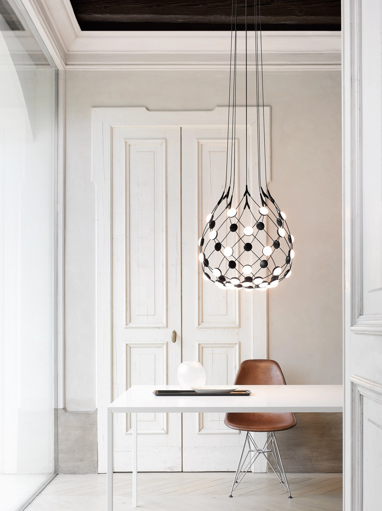
图：Mesh 原版整机：黑色柔性钢索网穹顶、节点 LED 矩阵。图源：Luceplan 官网 Mesh 产品页。
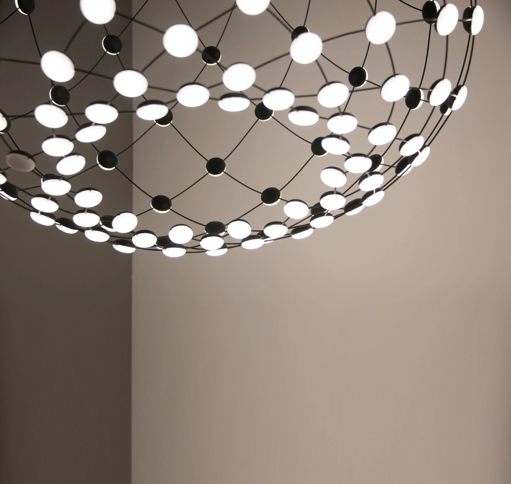
图：Mesh 钢索交叉节点上的微小 LED 点光源阵列特写。图源：Luceplan 官网 Mesh 产品页。
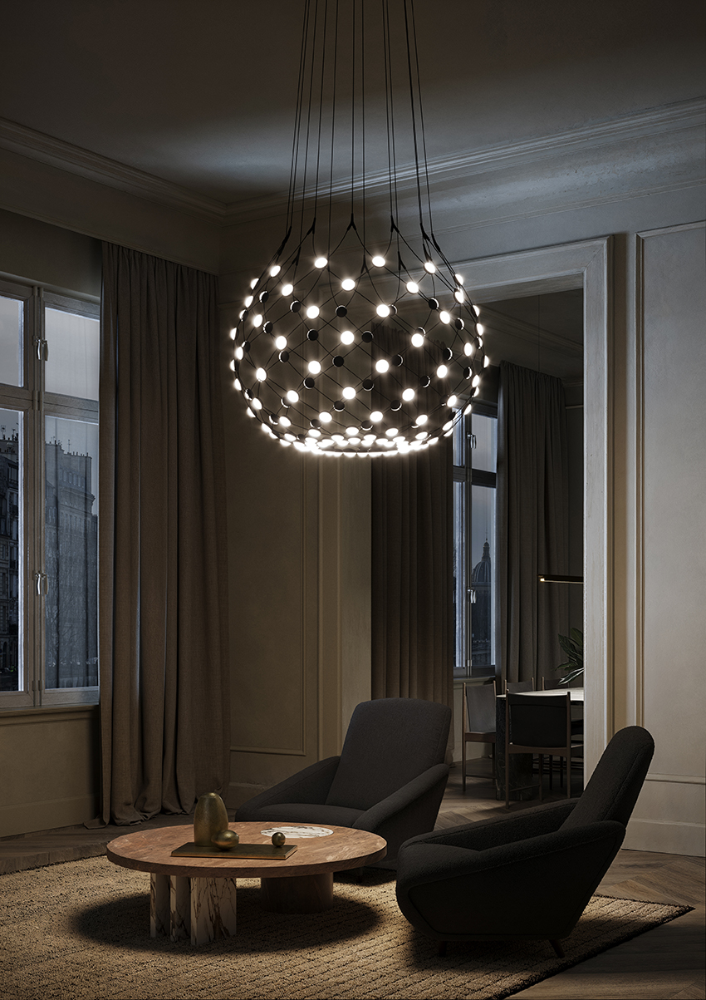
图：Mesh 挑高酒店大堂/客厅安装实景。图源：Luceplan 官网 Mesh Wireless 产品页。
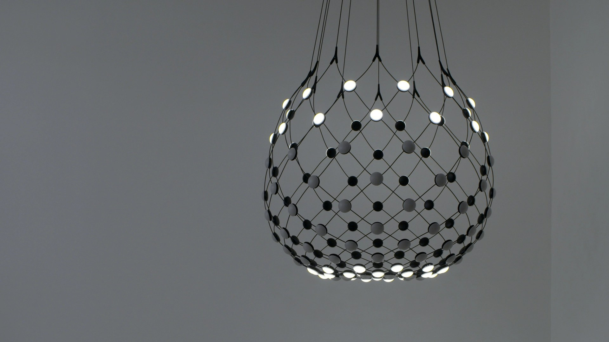
图：Mesh Wireless（蓝牙智能版）整机与自研 App 控制示意。图源：Luceplan 官网 Mesh Wireless 产品页。
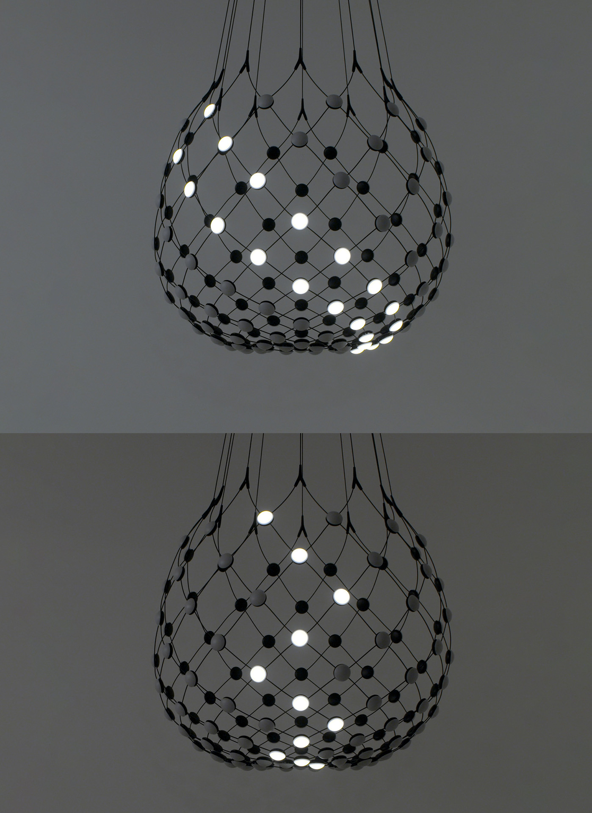
图：两台 Mesh Wireless 穹顶同时点亮的无线编组状态。图源：Luceplan 官网 Mesh Wireless 产品页。
Compendium 与 Compendium Circle（2017，Daniel Rybakken）：旋转反射器切换光的去向
Compendium 是 Rybakken 时期"极简线性建筑光"的代表，工程渠道（contract）走量款。一支细长线性灯（floor/suspension），安装时旋转反射器即可选择直接下照或间接上照；Compendium Circle 是其"诗意的圆形"扩族，黑/黄铜饰面。光源 LED 39W（线性）/54W（Circle），2700K 或 3000K、CRI 90；符合欧盟生态设计要求的可更换 LED（仅限终端用户按说明更换）。
图：Compendium Suspension（D81）线性灯整机，Bronzo scuro 细长悬杆。图源：Luceplan 官网 Compendium 吊灯页。
图：Compendium Floor 三色并置（银/黑/黄铜）。图源：Luceplan 官网 Compendium 落地页。
图：Compendium Suspension 家庭办公室场景。图源：Luceplan 官网 Compendium 吊灯页。
图：Compendium Circle（D81C）圆形版本，黑色细圆环吊灯。图源：Luceplan 官网 Compendium 吊灯页。
Levante（2021，Marco Spatti）：三扇"米纸"相交的情绪吊灯
Levante 是 Luceplan 与新一代设计师 Marco Spatti 合作的"情绪化吊灯"代表。官方原文："created as a chandelier with an ethereal, emotional design, is formed by the intersection of three large fans made in an unusual material from the food sector – resembling rice paper – capable of uniformly spreading the light across the entire surface."即三扇极薄半透明扇片相交，材料来自食品工业、类似宣纸/米纸，光在整个扇面均匀漫射；光源藏在中央核心里，"像一颗有机的、跳动的心脏"。后扩展出落地版，由三根钢杆构成稳定结构。命名"Levante"意为意大利语"东风/朝阳方向"（官方未给出释义）。
图：Levante（A06）整机：三扇"米纸"半透明扇片相交的吊灯。图源：Luceplan 官网 Levante 故事页。
图：Levante 安装于高挑空间的展开状态。图源：Luceplan 官网 Levante 故事页。
图：Levante 单扇片半透光材质与均匀漫射特写。图源：Luceplan 官网 Levante 故事页。
图：Levante 食品工业特种半透明"米纸"扇面材质特写，光在整片扇面均匀漫射。图源：Luceplan 官网 Levante 故事页。
Koinè（Mandalaki Studio，约 2022）：共同语言与边界清晰的光锥
Koinè 来自古希腊语"共同语言/通用语"（官方直接释义）。Mandalaki Studio 由 Enrico De Lotto、George Kolliopoulos 与 Giovanni Senin 于 2012 年创立，自述"设计意味着寻找一种超越个人风格、永恒而无国界的字母表"。Koinè 的核心光学是定制矿物透镜（mineral lens）：光束均匀而边界清晰，形成一只"边界明确的宽光锥"。五个直径 Ø20–110cm，LED 12–30W，2700/3000/3500K、CRI 90。家族扩展出 Wall、Floor、acoustic（声学）与 cluster（工程群装）版本。首版年份官方产品页未直接标注（约 2021–2023，台账暂记约 2022），列为待核实。
图：Koinè（A07）扁平圆碟吊灯：哑光黑圆盘加矿物透镜。图源：Luceplan 官网 Koinè 产品页。
图：Koinè 多尺寸/厨房岛台双灯组合场景。图源：Luceplan 官网 Koinè 产品页。
图：Koinè acoustic 声学版，灰色吸音材质圆碟。图源：Luceplan 官网 Koinè 产品页。
图：Koinè 矿物透镜 still life：边界清晰的锥形光斑光学特写。图源：Luceplan 官网 Koinè 产品页。
J-us（2024，Alessandro Zambelli）：带电轨道上的可拆多头吊灯
J-us 是 Zambelli 对传统多头吊灯的当代重译。官方原文："J-us comes from an unusual interpretation of the traditional chandelier with arms, where the technological innovation and research on materials are completely concealed from view."中央圆柱结构是一条带电轨道（electrified track），单臂/双臂自由插入卡槽滑动，用户可自行组合不同配置——电气系统完全藏进轨道。材料为铝结构+铜与玻璃纤维臂+聚碳酸酯灯罩，哑光黑/缎金饰面；XL 版灯体高约 93cm、直径 Ø135cm、LED 102W。J-us 入选 ADI Design Index 2024，成为 2026 年金圆规候选产品；2025 米兰设计周展出 XL 版。命名"J-us"官方未释义（疑为双关，B 级推测）。
图：J-us（A09）多头吊灯整机：中央圆柱电轨加可插拔臂。图源：Luceplan 官网 J-us 产品页。
图：J-us XL 大尺寸版安装实景（Como 项目）。图源：Luceplan 官网 J-us 产品页。
图：J-us 缎金（satin gold）铜臂版本。图源：Luceplan 官网 J-us 产品页。
Zile（Archirivolto，约 2020/2021）：藏铃形生物塑料灯罩
Zile 是 Luceplan 可持续叙事的当代样本。官方卡片原文：灯罩用耐用生物塑料 PLA（通常用于包装、可堆肥），80% 来自可再生原料（糖、甘蔗、玉米、纤维素副产物），制造低碳；几乎所有材料可回收/再生。命名官方直接释义：因灯罩形似藏铃（Tibetan bell）得名。形态覆盖 floor/table/suspension。首版年份官方卡片未直接标注（推测 2020/2021），列为待核实。消费者对 PLA 的耐热性、长期泛黄有疑问，官方强调其"biodurable（耐用生物）"定位。
图：Zile（B02）藏铃形 PLA 生物塑料灯罩整机（brick 色）。图源：Luceplan 官网 Zile 产品页。
图：Zile 40 版双钟形灯罩置于厨房中岛场景。图源：Luceplan 官网 Zile 产品页。
图：Zile Floor 落地版客厅场景。图源：Luceplan 官网 Zile 产品页。
Blow（1997，Ferdi Giardini）：灯在扇叶之上的专利吊扇灯
Blow 是 Luceplan 目录中唯一的风扇灯，也是雕塑家 Ferdi Giardini（1959 年生于都灵）的设计生涯收官作。它的专利结构是"灯在扇叶之上"（fan with the light above its blades）：彩色或透明甲基丙烯酸酯（PMMA）扇叶在下旋转，白光输出不被扇叶遮挡；红外遥控同时控制灯与扇，风速可调、噪音极低。1997–98 年量产，2015 年 5 月推出第三代可调光电子版。现行目录仍在售。Good Design Chicago 1999 为经销商标注（B 级待复核）。需要说明：任务线索中的"Hamburg Fan"经核实并非 Luceplan 型号，品牌目录中唯一的风扇灯即 Blow。
图：Blow（D28）吊扇灯整机：灯在扇叶之上、透明 PMMA 扇叶在下，专利布局。图源：Luceplan 官网 Blow 产品页。
图：Blow 透明甲基丙烯酸酯扇叶放射纹理与灯体细节。图源：Luceplan 官网 Blow 产品页。
户外与配重家族：Flia、Doi（2020–2021）
Flia（Alessandro Zambelli, 2020）是户外线代表：细碳纤维杆加铝合金微型灯头，光源小型化是关键——官方称"光的小型化是核心因素"，获 Red Dot Best of Best。Doi（Meneghello Paolelli Associati）则是"配重即交互"的样本：900 克钢盘作配重，灯头被电缆上的磁吸吸住、可沿钢索滑动定位。二者分别代表 Luceplan 2020 年代向户外与机构交互的延伸。
图：Flia（A04）户外灯：细碳纤维杆加微型灯头，草地夜景。图源：Luceplan 官网 Flia 产品页。
图：Doi（A05）配重圆盘吊灯家族：钢盘配重加电缆灯头。图源：Luceplan 官网 Doi 产品页。
08 Aesthetics 美学：薄、透、悬浮与可拆解
字标与色彩
Luceplan 字标是两行无衬线大写：上行 LUCE、下行 PLAN，黑色或深灰、字距紧、几何感强，长期稳定（字标设计师与改版年代官方未留记录，待核实）。品牌没有"品牌色"：产品色彩系统随材料走——基础色是白、哑光黑、阳极氧化银、gunmetal；重点色出现在可换部件上（Costanza 40 周年三款图案灯罩、Titania 四色滤片、Berenice 七色反射器）；当代 LED 款统一 2700K、CRI 90。
对照坐标：FLOS 走"白色+大理石+cocoon 雾面"的雕塑诗意，Artemide 走"银灰工程理性"，Luceplan 走"透明聚碳酸酯+阳极铝+薄胶合板"的工程师轻盈感。它的视觉关键词是薄、透、悬浮、可拆解——不是重、厚、手工雕塑。
光的氛围
Luceplan 的光学语法与 FLOS（间接光）、Artemide（Human Light）都不同：漫射+棱镜折射并重。Costanza 用乳白 PC 漫射，Metropoli 用棱镜玻璃折射，Hope 用菲涅尔透镜聚光成星点反射；当代 LED 款统一眩光控制，LED 从不裸露，始终藏在反射器、透镜、织物、胶合板之后。官方广告摄影偏好中性空间里的单点光，强调"光先被塑形，再照亮人"。
展位、橱窗与旗舰店
Luceplan 与 FLOS 同在米兰 Corso Monforte——Luceplan 在 7 号、FLOS 在 9/15 号，官方旗舰店页称这条街"famous as the 'street of lights'"。2025 年 Euroluce 展位被官方描述为"全彩色容器式陈列"（full-color container），与 FLOS 2025"Light of the Mind"内省式暗调房间形成鲜明反差。传播阵地偏建筑师与 contract 渠道（Architonic、Archiexpo、IFDM、Interni），而非生活方式大众媒体。
图：2025 米兰设计周 Euroluce 展位，"全彩色容器式"陈列新品。图源：Luceplan 官网米兰设计周 2025 故事页。
图：米兰 Corso Monforte 7 旗舰店橱窗夜景，窗内多头吊灯陈列。图源：Luceplan 官网旗舰店页。
09 Design 设计：从功能与光源出发
设计哲学：功能、需求或一种光源
现任 CEO Patrizia Vicenzi 在 IFDM 2015 年 Euroluce 现场访谈中的原话，是 Luceplan 设计哲学最权威的表述：
"Luceplan never starts out from the formal aspect of a product. Design is born of a function, a need or a light source which offers many possibilities for further elaboration. This is the starting point of product development. The artistic effect is the result of this process."
即：Luceplan 从不从产品形式出发；设计诞生于一个功能、一个需求或一种新光源，艺术效果是这个过程的结果。同场她还说："如果市场提供了一种更高效、更节能的合理技术，我们有责任充分使用它……我们相信 LED 是未来的光源。"以及谈选人标准："我们试图识别那些拥有诠释光的天赋的人，这是一种神奇的礼物。"
落到具体产品决定：Costanza 不从"我要做一个好看的灯罩"出发，而是解决"传统灯罩如何用一片自支撑聚碳酸酯做成、不再需要金属骨架"；Hope 不从"我要做一个水晶吊灯"出发，而是把灯塔用的菲涅尔透镜做成可拆分花瓣；Counterbalance 不从"我要做一个壁灯"出发，而是用热塑齿轮组平衡 190 厘米钢臂的重量。三层信念来源：Arteluce 谱系（光学优先）、米兰理工+塑料工程师文化（PC、PMMA、聚氨酯发泡早于同行大规模上灯）、1970 年代石油危机的节能基因（法国经销商页表述为"创立于石油危机期间的公司"；官方只说"自诞生起重视节能"，因果措辞不以官方身份写死）。
CMF：九种招牌材料的决策逻辑
Luceplan 的材料史从一片聚碳酸酯开始。Costanza（1986）是第一盏应用自支撑聚碳酸酯灯罩的灯——传统灯罩需要金属骨架绷布，Rizzatto 用一片 PC 薄板自身刚度成型；Hope 则用注塑 PC"小枝条"+PMMA 平菲涅尔透镜。此后材料版图逐步扩大：
- PMMA/亚克力：Hope 的菲涅尔透镜把灯塔聚光光学小型化到家居吊灯；Blow 的透明扇叶。
- 铝：Fienile 阳极氧化缎面铝、Doi 挤压铝、Berenice 压铸铝加增强尼龙摩擦铰链与 Rynite 树脂灯头座。
- 钢：Hope 抛光不锈钢枝架、Counterbalance 钢臂加热塑齿轮、Mesh 钢索网。
- 聚氨酯发泡：Soleil Noir（Studio Odile Decq, 2015）整体为模塑发泡聚氨酯，壁厚 8–25mm 变化、单根不对称钢索靠壁厚变化实现重心平衡——Odile Decq 自述"当太阳与月亮约会……月亮进入太阳，光晕显现"。
- 薄胶合板：Illan（Zsuzsanna Horvath）用激光切割薄柔性胶合板，结构采用 FSC 认证木材。
- 混凝土与碳纤维：Nui 以浅灰混凝土浇铸两个互锁圆柱；Flia 用碳纤维杆。
- 声学织物：Silenzio（Monica Armani, 2013）外层为 Kvadrat Remix 3 织物（90% 羊毛+10% 尼龙）；Farel 用 60% 再生材料毛毡吸音反射器。
术语注释：CMF（Color, Material, Finish）——颜色、材料与表面处理，品牌产品语言的物质基础。
制造：米兰总装与外协共研
Luceplan 总部办公在米兰 Via Ernesto Teodoro Moneta 40；旗舰店 Corso Monforte 7；Luceplan USA 在 Secaucus NJ（办公 Tribeca）。官方只说"Made in Italy"，未公开具体工厂地址与产能（待核实）。自制部分为米兰总装、光学调校、品控与 contract 项目工程；外协包括聚碳酸酯注塑、PMMA 透镜、铝挤压/压铸、混凝土浇铸、碳纤维杆与丹麦 Kvadrat 织物。官方 2010 目录自述了与意大利工业区供应商深度共研的模式："把供应商（材料与工艺所有者）纳入实验与研究过程，鼓励其实施可量化改进。"
图：Hope 的 PMMA 平菲涅尔透镜花瓣特写——把灯塔聚光光学器件家用化。图源：Luceplan 官网 Hope 产品页。
品牌主张与产品落点
| 品牌主张 | 产品落点 |
|---|---|
| 设计从功能与光源出发，造型是结果 | Costanza（自支撑 PC 灯罩）；Counterbalance（齿轮配重解决长壁灯定位）；Hope（菲涅尔透镜代替水晶切割） |
| 光学器件家用化：把工业透镜搬进餐厅 | Hope（PMMA 菲涅尔花瓣）；Metropoli（棱镜模压玻璃扩散器） |
| 力学奇观即情感：看起来不平衡其实平衡 | Soleil Noir（单钢索不对称悬挂）；Doi（900g 钢盘配重吸住灯头） |
| 薄、透、悬浮，不做重雕塑 | Illan（激光切割薄胶合板）；Costanza（一片 PC 锥罩）；Mesh（钢网节点布 LED） |
| 长寿命可拆解，坏了零件能换 | Costanza 全系列可互换 PC 灯罩；"removable parts, easy repair" |
| 灯与声学一体，2012 年起即布局 | Pétale 2012、Silenzio 2013（Kvadrat 羊毛织物）、Farel 2018、Hinpan 2025 |
| 室内外边界消融，2020 年起做户外 | Fienile（阳极铝）、Nui（混凝土）、Flia（碳纤维杆） |
| 不做全屋智能生态，只做产品级控制 | Mesh Wireless 自研 App；DALI/0-10V 给 contract；家用款触摸调光为主 |
| 从 Arteluce 谱系继承"光学优先" | 创始人 Riccardo Sarfatti 是 Gino Sarfatti 之子；1978 成立即定位"光的项目研究" |
图：长期合作设计师 Alberto Meda（1945 年生），1984 年加入 Luceplan，2026 年获金圆规终身成就奖。图源：Alberto Meda 个人官网。
10 Experience 体验：机制本身就是体验
体验观：工程透明化
Luceplan 的产品体验观可以概括为"机制本身就是体验"：Costanza 用可触摸调光（sensory touch dimmer）——手指碰灯罩金属边即调光，1986 年就在做电容触摸；Counterbalance 用热塑齿轮阻尼让 190cm 钢臂停在任意角度；Doi 用 900g 钢盘配重吸住灯头沿钢索滑动定位；Soleil Noir 用壁厚变化实现"视觉上违背静力学"的平衡。交互是机械与手势，不是 App。
轻量化与安装
与 FLOS Arco 65kg 大理石底座形成对照，Luceplan 经典款（Costanza 系列、Berenice、Illan）都是轻量化铝+PC 结构，单人可安装；Hope 吊灯零售商描述为"incredibly light and easy to dismantle"。户外款 Flia 需地插或底座固定，Fienile 是 32/72cm 落地小塔、摆放式。这是 Luceplan 体验维度最被低估的差异：它的灯是可以一个人搬进公寓的。
调光、智能与维护
家用款以触摸调光、Triac/ELV 可控硅调光（Doi）与 0-10V（contract 选项）为主；Mesh Wireless 走自研 App 单灯/分组控制。Luceplan 不主动接入 Philips Hue/HomeKit/Matter 生态（尽管曾在 Signify 体系内九年），智能调光主要靠自研 App 或 DALI/0-10V 专业总线。维护层面，Costanza 官方与经销商均强调"可拆零件、易于维修与报废处理"——灯罩、灯座、杆可拆分更换；但 LED 化后电子变压器损坏倾向整灯或组件更换（德国二手市场有"变压器损坏按故障品出售"的个体帖，C 级样本，不上升为品牌级问题）。
口碑正负样本
正面（C 级，主体为经销商与设计媒体）：Architonic 称 Costanza 为"Luceplan 的第一个大爆款，产量超一百万件"；设计媒体长期把 Luceplan 描述为"技术与诗意平衡"的工程师型品牌；KMSKA 皇家美术馆等项目复购率高。负面：与 FLOS/Artemide 同档相比，Luceplan 大众认知度低（中国市场尤甚）；2019 年从 Signify 剥离后北美渠道经历调整期；电子件维修依赖意大利总部备件、非欧市场等待周期长。
11 Competition 竞品：理性光学在雕塑与工程之间
集团归属
先厘清归属链：Luceplan 自 2019 年 11 月起属 Calligaris Group（Alpha Private Equity 控股，2023 年更名 Orbital Design Collective）；FLOS 属 Flos B&B Italia Group（Investindustrial/Carlyle）；Artemide 为 Gismondi 家族独立；Louis Poulsen 于 2026 年 9 月完成向丹麦 Chr. Augustinus Fabrikker 的交割（详见本库 FLOS/Artemide 报告，不重复展开）。
品牌层与产品层竞品
| 品牌 | 国别/归属 | 创立 | 定位一句话 | 价格带（与 Luceplan 对照） | 代表产品 | 与 Luceplan 的关键差异 |
|---|---|---|---|---|---|---|
| Artemide | 意大利；Gismondi 家族独立 | 1960 | 工程师美学、The Human Light、光质量 | 走量台灯同档（Tizio $630、Tolomeo €231 起），略低于 Costanza floor $690 | Tizio、Tolomeo、Eclisse | 理念最近（建筑师/理性），但更独立、展厅更多 |
| FLOS | 意大利；Flos B&B Italia Group | 1962 | 雕塑感、形式实验、设计师平台 | 同尺度经典贵 30–80%（Snoopy €1,267 vs Berenice $750） | Arco、Taccia、IC | 更雕塑/形式；Luceplan 更理性/光学 |
| Oluce | 意大利；Verderi 家族 | 1945 | 意大利现存最老设计灯具公司，老派几何再版 | 与经典段重合但体量小 | Atollo、Spider | 产品线窄、无声学/系统段 |
| Louis Poulsen | 丹麦；2026-09 起 Chr. Augustinus Fabrikker | 1874 | 北欧半遮光/无眩光三层反射哲学 | 同高端段 | PH Artichoke、PH 5 | 北欧间接/反射光 vs Luceplan 直接/任务光 |
| Foscarini | 意大利；2022 持 Ingo Maurer 90% | 1981 | 穆拉诺吹玻、感性有机形态 | 中段重合 | Twiggy、Caboche | 吹玻/有机感性 vs Luceplan 理性铝/PC |
| Nemo Lighting | 意大利 | 1993 | 现代主义大师未投产图纸的官方出版方 | 同高端段 | Le Corbusier、Perriand | 大师档案运营 vs 当代建筑师平台 |
从坐标看，Artemide 是 Luceplan 最直接的同国对手：两者都创立于 1960 年代前后、都以建筑师与理性光学立身、都有金圆规经典与博物馆馆藏；但 Artemide 走"人本之光"的品牌哲学与更广的展厅网络，Luceplan 走"功能与光源出发"的工程师方法论与更深的 contract 渠道。FLOS 与 Luceplan 恰好构成意大利照明两极端：FLOS 的 Castiglioni 用现成品与幽默，Luceplan 的 Meda/Rizzatto 用材料与光学；前者贵 30–80% 且更出圈，后者更理性、更便宜、更工程。Louis Poulsen 代表北欧光学哲学的另一极，Foscarini 与 Luceplan 在中端项目清单上频繁同场。
12 Strategy 战略：两次易主与一条光学主线
技术路线与产品规划
Luceplan 是意大利设计品牌里较早系统拥抱 LED 的之一：2010 年 Philips 入主后加速（Hope 2009 已是 LED 适配设计）；现任 CEO 明确表态"LED 是未来的光源，有责任用足"。但它的智能照明克制而具体：不做全屋生态，只做产品级 App（Mesh Wireless）与 DALI/0-10V contract 接口。两条差异化的产品线构成第二曲线：声学照明（2012 年起布局，官方称自己是照明行业最早把灯与吸音做进同一产品的品牌之一）与户外照明（2020 年扩品类，Vicenzi 称"室内外边界正在消融"）。
两次易主的战略逻辑
第一段（2010–2019，Signify 体系内）：Philips 买 Luceplan 是为补"设计 LED 灯具"产品线、借意大利设计品牌进入 Consumer Luminaires；Luceplan 借 Philips 的 LED 研发完成 LED 化。但 Signify 整体重心转向 Philips Hue 与 Interact 互联系统后，装饰设计灯被视为非核心——2019 年 10 月以"聚焦功能性/互联照明"为由整体出售（当时营收约 €20M）。
第二段（2019 至今，Calligaris/Orbital 体系内）：Calligaris 买 Luceplan 是为从家具延伸到照明，与 Connubia、Ditre Italia、Fatboy 共享 8000 个零售点；协同方向是渠道共享与"家具+照明"住宅项目打包，不强行注入技术，Luceplan 保持米兰独立设计与工程团队。关键判断（置信度：高）：Luceplan 从"工业集团内的设计品牌"变成"家具集团内的照明专业品牌"，组织独立性反而增强——Signify 时期它被迫接受全球标准化流程，Orbital 时期它更像集团内独立运营的子品牌。
渠道与品牌影响力
出口占销售约 85%；全球约 2000 个销售点（2019–2020 口径）；旗舰店米兰 Corso Monforte 7、纽约 Tribeca/Spring Place；contract 代表项目包括安特卫普 KMSKA 皇家美术馆、巴黎 Clichy-Batignolles（Odile Decq）。品牌影响力资产：金圆规产品奖 7 座+两位终身成就奖（Rizzatto 2024、Meda 2026）；MoMA 馆藏三件；Quirinale 总统府馆藏 Hope；SaloneSatellite 永久收藏选入 Mesh、Illan、Counterbalance 参加 2025 大阪世博会意大利馆展。
关键取舍与风险
第一，家具集团 vs 工业集团：Luceplan 选了家具集团而不是留在 Signify，好处是设计自主权与住宅渠道协同，风险是 Calligaris 集团体量有限（2022 年 €248.5M、750+ 员工），Luceplan 单体约 €20–30M 量级，抗周期能力弱于 Flos B&B Italia Group（€888M GMV）。（置信度：中）
第二，声学+户外是第二曲线但都是新进入者赛道：声学照明要与 BuzziSpace、Kvadrat Acoustics 等专业品牌竞争，户外要与 FLOS Outdoor、iGuzzini、ERCO 竞争；Luceplan 的基因是"装饰灯+工程光学"，不是系统化建筑照明。（置信度：高）
第三，明星设计师代际：Rizzatto（1941 生）、Meda（1945 生）已进入终身成就奖阶段；当代主力 Rybakken、Gomez Paz、Mandalaki、Zambelli、Horvath 的博物馆级地位尚未经 30 年检验。（置信度：中）
第四，Signify 历史红利消退：离开 Signify 后不再共享 Philips LED 供应链与全球物流体系，电子件与成本控制可能承压（未披露，待观察）。（置信度：低-中）
第五，中国市场声量弱：与 FLOS、Artemide 相比认知度低、零售点仅上海/杭州少数几家——既是风险也是空白机会。（C 级）
图：官方公司页标杆项目实景（临水/度假项目应用），contract 能力展示。图源：Luceplan 官网公司页。
13 视频与访谈资料
- Luceplan 官方 Stories 频道（Costanza 40 周年、Berenice 40 周年、Hono、Levante、Milano Design Week 2025）：https://www.luceplan.com/stories/
- IFDM 2015 Patrizia Vicenzi 访谈《Luceplan and the Shape of Light》（方法论原话）：https://ifdm.design/2015/05/18/luceplan-and-the-shape-of-light-interview-with-patrizia-vicenzi/
- Architonic 2021《Lights out: Luceplan》（Vicenzi 谈室内外消融、户外系列）：https://www.architonic.com/en/s/lights-out:-luceplan/20188700
- Lumens The Edit《The Utopia of Reality: A Q+A with Paolo Rizzatto》（2026-07）：https://the-edit.lumens.com/the-makers/the-utopia-of-reality-a-qa-with-paolo-rizzatto/
- Interni Magazine Designers' Week 2020（Rybakken Cassette 系列首发）：https://www.internimagazine.com/designers-week-2020/luceplan-idw-2020/
- Triennale Milano《Alberto Meda: Tension and Lightness》（2023-10 至 2024-01 个展）：https://triennale.org/en/magazine/alberto-meda-cinque-oggetti1
- Astep 官方 YouTube（Alessandro Sarfatti 家族史自述）：https://m.youtube.com/watch?v=G95eo827GV4
14 来源与延伸阅读
官方与集团资料：
- Luceplan 官网公司页：https://www.luceplan.com/about/company/
- Luceplan 官网产品目录：https://www.luceplan.com/us/products/
- Luceplan 官方 2013 Pocket Catalog（创立叙事主源）：https://static1.squarespace.com/static/550a19d1e4b0fca40dc6d82d/t/5566415ae4b0800d8d860a30/1432764762276/Luceplan+Pocket+Catalog+2013.pdf
- Luceplan 官方 2026 Catalog（Culture of Light、金圆规序列）：https://www.luceplan.com/wp-content/uploads/Luceplan_Catalogue-2026-2.pdf
- Luceplan 官方设计师页 Rizzatto：https://www.luceplan.com/us/designers/paolo-rizzatto/ ；Sarfatti：https://www.luceplan.com/us/designers/riccardo-sarfatti/
- Luceplan 米兰旗舰店：https://www.luceplan.com/us/about/luceplan-flagship-store-milan/
- Luceplan 经销商定位器（含中国 Quansheng）：https://www.luceplan.com/it/dove-acquistare/negozi/
- Luceplan 官网新闻：https://www.luceplan.com/it/news-ed-eventi/
资本与集团：
- Philips Q4 2010 财报演示（列 Luceplan 2010 收购）：https://www.philips.com/consumerfiles/newscenter/main/corpcomms/resources/corporate/Q4_2010/Q4_2010_press_conference_presentation.pdf
- Signify 官方新闻稿：出售 Luceplan 给 Calligaris（2019-10-07）：https://www.signify.com/it-it/our-company/news/press-releases/2019/20191007-signify-to-sell-luceplan-to-calligaris-to-strategically-focus-on-its-core-home-business-of-functional-and-connected-lighting-products-and-systems
- Calligaris 官方收购公告（2019-07-10）：https://www.calligaris.com/GB/en/calligaris-reaches-an-agreement-with-signify-to-acquire-luceplan
- Oaklins 交易档案（2019-11 交割）：https://www.oaklins.com/nl/en/deals/107163/
- Orbital Design Collective 集团页：https://www.orbitaldesigncollective.com/en/group
- WWD 2023-10-06 更名报道：https://wwd.com/home-design/shop-home/exclusive-italys-calligaris-group-to-unveil-design-forward-rebrand-1235855035/
- Signify 2025 全年财报（€5.8B，前东家参照）：https://www.signify.com/static/quarterlyresults/2025/q4_2025/signify-fourth-quarter-and-full-year-results-2025-report.pdf
博物馆、奖项与法律：
- ADI Design Museum：Lola 1989 金圆规：https://www.adidesignmuseum.org/i-premiati/lampada-lola/
- MoMA On Off Table Lamp (1983)：https://www.moma.org/collection/works/2964
- MoMA Constanzina Table Lamp (1992)：https://www.moma.org/collection/works/1681
- MoMA Mix Lamp (2005)：https://www.moma.org/collection/works/120050
- 意大利总统府 Quirinale 当代艺术 Hope 馆藏：https://contemporaneo.quirinale.it/opera/hope
- Luceplan 新闻：Meda 获金圆规终身成就奖（2026-05）：https://www.luceplan.com/it/alberto-meda-vince-il-compasso-doro-adi-alla-carriera/
- Luceplan 新闻：Rizzatto 获金圆规终身成就奖（2024）：https://www.luceplan.com/us/paolo-rizzatto-wins-the-compasso-doro-adi-for-the-career/
- Red Dot Flia：https://www.red-dot.org/de/project/flia-55478
设计媒体与设计师一手资料：
- Alberto Meda 个人官网：https://www.albertomeda.com/en/biografia
- Paolo Rizzatto 个人站（金圆规编年）：https://www.paolorizzatto.it/biografia
- Architonic Luceplan 品牌页：https://www.architonic.com/en/brands/luceplan
- Finnish Design Shop Luceplan：https://www.finnishdesignshop.com/en-sg/brands/luceplan
- 1stDibs Duna（PAF Studio，Barbaglia/Colombo）：https://www.1stdibs.com/buy/set-adjustable-floor-lamp/
- LightDirectory：Philips 收购 Luceplan（2010-02-12）：https://m.lightdirectory.com/news-Philips-Acquires-Italy-based-Luceplan-SpA.htm
- Lumen Group 法国经销商页（石油危机叙事）：https://lumengroup.fr/partenaires/luceplan/
市场与行业数据：
- Mordor Intelligence 装饰照明市场：https://www.mordorintelligence.com/industry-reports/decorative-lighting-market
- Fortune Business Insights 高端照明市场：https://www.fortunebusinessinsights.com/high-end-lighting-market-114513
- ASSIL 意大利照明行业报告（2024 €3B、-7.4%）：https://www.assil.it/associazione-produttori-illuminazione/rassegna-stampa/
价格与零售（2026-10-21/22 实查）：
- 2Modern：https://www.2modern.com/ （Berenice、Costanza、Koinè）
- Modern Planet：https://modernplanet.com/shop-by-brand/luceplan.html （Lady/Grande Costanza、Counterbalance）
- Ottevangers：https://www.ottevangers.nl/luceplan/ （Costanza/Titania/Lola/Hope/Illan/Compendium）
- light11：https://www.light11.at/luceplan/berenice/ ；Prismalight：https://www.prismalight.it/marchio/luceplan/
- gmrcom（Mesh Ø100 €4,213）：https://gmrcom.it/collections/luceplan/lampada-a-sospensione
- Silvera（Compendium £1,140）：https://www.silvera.co.uk/eshop/luceplan-brand-design
- Platinlux（Blow €795）：https://www.platinlux.com/en/luceplan/
15 分析附录
附录一 产品组合矩阵
| 事业段 | 角色 | 代表系列 | 年份 | 价格带（2026-10 实查） |
|---|---|---|---|---|
| Decorative 经典 | hero | Costanza 家族 | 1986 | $552–3,082（Lady/Grande 高价段） |
| Decorative 经典 | hero | Berenice | 1985 | $750 起 / €523 |
| Decorative 经典 | 获奖/收藏 | Lola | 1987 | €669（比价 €409 起） |
| Decorative 经典 | 形象 | Titania | 1989 | €567–1,769（Queen） |
| Decorative 经典 | MoMA 馆藏 | Costanzina | 1992 | €248–449 |
| Decorative 经典 | 获奖 | Metropoli | 1992 | 项目询价 |
| Decorative 经典 | 价格天花板 | Hope | 2009/2010 | €1,329–14,749（∅200） |
| Decorative 经典 | 停产馆藏 | D7 / Mix / On Off | 1981–2005 | — |
| Decorative 当代 | hero | Ascent | 2013 | 项目/零售询价 |
| Decorative 当代 | 获奖 | Counterbalance | 2014 | $427–2,151 |
| Decorative 当代 | 高价戏剧 | Mesh / Wireless | 2015 | €2,587–4,213+ |
| Decorative 当代 | contract 走量 | Compendium | 2017 | €949 / £1,140 |
| Decorative 当代 | 情绪吊灯 | Levante | 2021 | 按配置 |
| Decorative 当代 | 光学系统 | Koinè | 约 2022 | €864–1,584 |
| Decorative 当代 | 传统重译 | J-us | 2024 | 按配置 |
| Decorative 当代 | 可持续 | Zile | 约 2020/2021 | €813–904 |
| 风扇灯 | 独家品类 | Blow | 1997/三代 2015 | €413–795 |
| Outdoor | 户外 | Flia / Nui / Fienile | 2020 | 项目询价 |
| Acoustic | 声学 | Pétale / Silenzio / Farel / Hinpan | 2012–2025 | 项目询价 |
附录二 CMF 速查
| 材料/工艺 | 用在哪里 | 决策逻辑 |
|---|---|---|
| 自支撑丝印聚碳酸酯（PC） | Costanza 灯罩（首创）、Titania 滤片 | 一片 PC 自身刚度成型，取代金属骨架绷布 |
| PMMA 平菲涅尔透镜 | Hope 花瓣 | 灯塔聚光光学小型化，折射成星点光 |
| 压铸铝 + 增强尼龙铰链 + Rynite | Berenice | 轻量弹簧臂阅读灯，42 零件体系 |
| 阳极氧化铝 / 挤压铝 | Fienile、Doi、Ascent | 表面耐久、结构轻盈 |
| 抛光不锈钢 / 钢索 / 热塑齿轮 | Hope 枝架、Mesh 钢网、Counterbalance | 结构美学 + 配重机构 |
| 模塑发泡聚氨酯（8–25mm 壁厚） | Soleil Noir | 单片成型、壁厚变化实现重心平衡 |
| 激光切割薄胶合板（FSC） | Illan | 光从缝隙漏出、可回收 |
| 浅灰混凝土 / 碳纤维 | Nui、Flia | 户外耐候 + 微型光源 |
| Kvadrat 羊毛织物 / 再生毛毡 | Silenzio、Farel | 灯+吸音一体化（2012 年起） |
| PLA 生物塑料（80% 可再生） | Zile | 可堆肥、低碳，形似藏铃 |
附录三 竞品对照（速查）
| 维度 | Luceplan | Artemide | FLOS | Louis Poulsen |
|---|---|---|---|---|
| 成立 | 1978 | 1960 | 1962 | 1874 |
| 核心方法 | 内部工程师×建筑师搭档 | 自建技术团队 | 外部明星设计师网络 | 北欧光学体系 |
| 光的取向 | 光学理性、边界清晰 | Human Light 光质量 | 雕塑感、间接光、幽默 | 无眩光多层反射 |
| 经典锚点 | Costanza/Lola/Hope | Tolomeo/Tizio/Eclisse | Arco/Taccia/Snoopy | PH 5/PH Artichoke |
| 同尺度价位 | 基准 | 略低或同档 | 贵 30–80% | 同高端段 |
| 工程线 | contract 核心、Liiu/Koinè | 建筑照明强 | Architectural（Antares） | 专业/hospitality 强 |
| 归属 | Orbital Design Collective（Alpha PE） | Gismondi 家族 | Flos B&B Italia Group | Chr. Augustinus Fabrikker（2026-09 起） |
附录四 定位表
| 要素 | 内容 |
|---|---|
| 目标人群 | 建筑师/照明设计师（specify）；高净值住宅买者；酒店/办公业主；设计礼品与收藏人群 |
| 参照系 | Arteluce 光学理性传统 + 意大利设计史（与 Cassina、Alessi 同评价层） |
| 核心 POD | Arteluce 谱系；工程与光学理性（PC/Fresnel/齿轮/手势）；7 座金圆规+MoMA/Quirinale 馆藏 |
| 必备 POP | 光学品质（2700K/CRI90/眩光控制）；项目协议与文件（dwg/IES/DALI/0-10V）；意大利制造与可拆解备件 |
| 品牌承诺 | 形式不是预设，是问题解决的结果；光先被当作工程问题，诗意是副产品 |
| 价格定位 | 高端段；走量经典与 Artemide 同档、低于 FLOS 30–80%；天花板由大直径项目款制造 |
| 渠道要点 | 官网不挂价不电商；旗舰店（米兰/纽约）+ 授权经销 + contract 直销；中国仅上海 1 家登记店 |
附录五 证据登记（关键结论）
| 结论 | 证据 | 来源 | 类型 | 置信度 |
|---|---|---|---|---|
| 1978 年三位建筑师创立（1979 口径并陈） | 2013/2026 官方目录；Sarfatti 悼文页 | 官方 | 官方 | 高 |
| Riccardo Sarfatti 为 Gino Sarfatti 之子、Arteluce 1964–78 工作 | 官方设计师页原文 | 官方 | 官方 | 高 |
| Sandra Severi 是 Sarfatti 之妻而非 Rizzatto 伴侣 | 2013 目录多语种"wife/moglie"原文 | 官方 | 官方 | 高 |
| 2010-05 并入 Philips Lighting Consumer Luminaires | Philips Q4 2010 财报；2013 目录 | 官方 | 官方 | 高 |
| 2019-10 宣布、2019-11 交割出售给 Calligaris（营收约 €20M） | Signify 新闻稿；Oaklins；Calligaris 公告 | 官方/交易档案 | 官方 | 高 |
| 2023 年集团更名 Orbital Design Collective | WWD 2023-10；集团页 | 官方/媒体 | 官方 | 高 |
| 金圆规产品奖 7 座（含 Ascent 2016） | 2026 目录版权页；ADI 评委会档案；Meda 传记 | 官方/奖项 | 官方 | 高 |
| Duna 非 Luceplan 产品（实为 PAF Studio） | 1stDibs/Whoppah 古董件；Luceplan 全目录无此名 | 第三方 | 第三方 | 高 |
| Airbag/Orix 官网未收录；Heron 为 Luxo 产品；Hamburg Fan 实为 Blow | 官网全量列表+站内搜索逐项核对 | 官方检索 | 官方 | 高 |
| Costanza 为"第一盏自支撑 PC 灯罩"、40 周年 2026 | Architonic；官方 40 周年故事页 | 官方/媒体 | 官方 | 高 |
| Hope 2011 金圆规、Quirinale 馆藏 | Konex/Quirinale/Lumens 一致 | 官方/馆藏 | 官方 | 高 |
| MoMA 馆藏三件（On Off/Costanzina/Mix） | MoMA 馆藏页直接著录 | 博物馆 | 官方 | 高 |
| Titania 1991 金圆规为"入选"非"获奖" | Connox 技术 PDF；Meda 传记 | 官方 | 官方 | 高 |
| 官网不挂价不电商；中国仅上海 1 家登记店 | 官网实查（2026-10-21/22） | 官方检索 | 官方 | 高 |
| 出口约 85%；contract 为"真正核心" | 官网公司页/Novità 页 | 官方 | 官方 | 高 |
| 2026-04 集团从 Flos 挖新高管 | StockScreener/WWD 报道 | 媒体 | B 级 | 中 |
| 2019 出售交易金额、2022 后单体营收未披露 | Signify/Orbital 均未披露 | 官方缺口 | 缺口 | — |
| 命名词源（Luce+Plan；Berenice/Costanza/Titania/Lola 出处） | 官方未释义，仅公共词源 | 二手 | C 级 | 低 |
| Koinè（约 2022）与 Zile（约 2020/2021）首版年份 | 官方产品页未标注 | 官方缺口 | 缺口 | — |